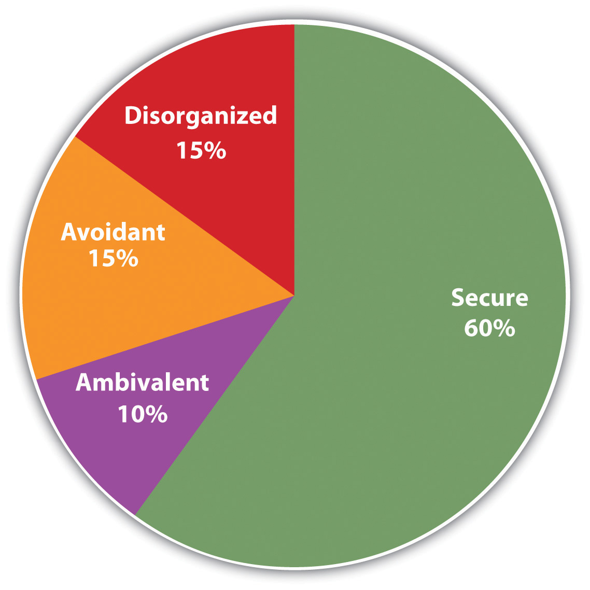

During the 1970s, American millionaire Robert Klark Graham began one of the most controversial and unique sperm banks in the world. He called it the Repository for Germinal Choice. The sperm bank was part of a project that attempted to combat the “genetic decay” Graham saw all around him. He believed human reproduction was experiencing a genetic decline, making for a population of “retrograde humans,” and he was convinced that the way to save the human race was to breed the best genes of his generation (Plotz, 2001).Plotz, D. (2001, February 8). The “genius babies,” and how they grew. Slate. Retrieved from http://www.slate.com/id/100331
Graham began his project by collecting sperm samples from the most intelligent and highly achieving people he could find, including scientists, entrepreneurs, athletes, and even Nobel Prize winners. Then he advertised for potential mothers, who were required to be married to infertile men, educated, and financially well-off. Graham mailed out catalogs to the potential mothers, describing the donors using code names such as “Mr. Grey-White,” who was “ruggedly handsome, outgoing, and positive, a university professor, expert marksman who enjoys the classics,” and “Mr. Fuchsia,” who was an “Olympic gold medalist, tall, dark, handsome, bright, a successful businessman and author” (Plotz, 2001).Plotz, D. (2001, February 8). The “genius babies,” and how they grew. Slate. Retrieved from http://www.slate.com/id/100331 When the mother had made her choice, the sperm sample was delivered by courier and insemination was carried out at home. Before it closed following Graham’s death in 1999, the repository claimed responsibility for the birth of 228 children.
But did Graham’s project actually create superintelligent babies? Although it is difficult to be sure, because very few interviews with the offspring have been permitted, at least some of the repository’s progeny are indeed smart. Reporter for Slate magazine David Plotz (2001)Plotz, D. (2001, February 8). The “genius babies,” and how they grew. Slate. Retrieved from http://www.slate.com/id/100331 spoke to nine families who benefited from the repository, and they proudly touted their children’s achievements. He found that most of the offspring in the families interviewed seem to resemble their genetic fathers. Three from donor Mr. Fuchsia, the Olympic gold medalist, are reportedly gifted athletes. Several who excel in math and science were fathered by professors of math and science.
And the offspring, by and large, seem to be doing well, often attending excellent schools and maintaining very high grade-point averages. One of the offspring, now 26 years old, is particularly intelligent. In infancy, he could mark the beat of classical music with his hands. In kindergarten, he could read Hamlet and was learning algebra, and at age 6, his IQ was already 180. But he refused to apply to prestigious universities, such as Harvard or Yale, opting instead to study at a smaller progressive college and to major in comparative religion, with the aim of becoming an elementary school teacher. He is now an author of children’s books.
Although it is difficult to know for sure, it appears that at least some of the children of the repository are indeed outstanding. But can the talents, characteristics, and skills of this small repository sample be attributed to genetics alone? After all, consider the parents of these children: Plotz reported that the parents, particularly the mothers, were highly involved in their children’s development and took their parental roles very seriously. Most of the parents studied child care manuals, coached their children’s sports teams, practiced reading with their kids, and either home-schooled them or sent them to the best schools in their areas. And the families were financially well-off. Furthermore, the mothers approached the repository at a relatively older child-bearing age, when all other options were exhausted. These children were desperately wanted and very well loved. It is undeniable that, in addition to their genetic backgrounds, all this excellent nurturing played a significant role in the development of the repository children.
Although the existence of the repository provides interesting insight into the potential importance of genetics on child development, the results of Graham’s experiment are inconclusive. The offspring interviewed are definitely smart and talented, but only one of them was considered a true genius and child prodigy. And nurture may have played as much a role as nature in their outcomes (Olding, 2006; Plotz, 2001).Olding, P. (2006, June 15). The genius sperm bank. BBC News. Retrieved from http://www.bbc.co.uk/sn/tvradio/programmes/horizon/broadband/tx/spermbank/doron/index_textonly.shtml; Plotz, D. (2001, February 8). The “genius babies,” and how they grew. Slate. Retrieved from http://www.slate.com/id/100331
The goal of this chapter is to investigate the fundamental, complex, and essential process of human development. DevelopmentThe physiological, behavioral, cognitive, and social changes that occur throughout human life, which are guided by both genetic predispositions (nature) and by environmental influences (nurture). refers to the physiological, behavioral, cognitive, and social changes that occur throughout human life, which are guided by both genetic predispositions (nature) and by environmental influences (nurture). We will begin our study of development at the moment of conception, when the father’s sperm unites with the mother’s egg, and then consider prenatal development in the womb. Next we will focus on infancyThe developmental stage from birth to 1 year of age., the developmental stage that begins at birth and continues to one year of age, and childhoodThe developmental period from infancy to the onset of puberty., the period between infancy and the onset of puberty. Finally, we will consider the developmental changes that occur during adolescenceThe years between the onset of puberty and the beginning of adulthood.—the years between the onset of puberty and the beginning of adulthood; the stages of adulthoodThe stage of life after adolescence, including emerging, early, middle, and older adulthood. itself, including emerging, early, middle, and older adulthood; and finally, the preparations for and eventual facing of death.
Each of the stages of development has its unique physical, cognitive, and emotional changes that define the stage and that make each stage unique, one from the other. The psychologist and psychoanalyst Erik Erikson (1963, p. 202)Erikson, E. H. (1963). Childhood and society. New York, NY: Norton. proposed a model of life-span development that provides a useful guideline for thinking about the changes we experience throughout life. As you can see in Table 6.1 "Challenges of Development as Proposed by Erik Erikson", Erikson believed that each life stage has a unique challenge that the person who reaches it must face. And according to Erikson, successful development involves dealing with and resolving the goals and demands of each of the life stages in a positive way.
Table 6.1 Challenges of Development as Proposed by Erik Erikson
| Stage | Age range | Key challenge | Positive resolution of challenge |
|---|---|---|---|
| Oral-sensory | Birth to 12 to 18 months | Trust versus mistrust | The child develops a feeling of trust in his or her caregivers. |
| Muscular-anal | 18 months to 3 years | Autonomy versus shame/doubt | The child learns what he or she can and cannot control and develops a sense of free will. |
| Locomotor | 3 to 6 years | Initiative versus guilt | The child learns to become independent by exploring, manipulating, and taking action. |
| Latency | 6 to 12 years | Industry versus inferiority | The child learns to do things well or correctly according to standards set by others, particularly in school. |
| Adolescence | 12 to 18 years | Identity versus role confusion | The adolescent develops a well-defined and positive sense of self in relationship to others. |
| Young adulthood | 19 to 40 years | Intimacy versus isolation | The person develops the ability to give and receive love and to make long-term commitments. |
| Middle adulthood | 40 to 65 years | Generativity versus stagnation | The person develops an interest in guiding the development of the next generation, often by becoming a parent. |
| Late adulthood | 65 to death | Ego integrity versus despair | The person develops acceptance of his or her life as it was lived. |
Source: Adapted from Erikson, E. H. (1963). Childhood and society. New York, NY: Norton (p. 202).
As we progress through this chapter, we will see that Robert Klark Graham was in part right—nature does play a substantial role in development (it has been found, for instance, that identical twins, who share all of their genetic code, usually begin sitting up and walking on the exact same days). But nurture is also important—we begin to be influenced by our environments even while still in the womb, and these influences remain with us throughout our development. Furthermore, we will see that we play an active role in shaping our own lives. Our own behavior influences how and what we learn, how people respond to us, and how we develop as individuals. As you read the chapter, you will no doubt get a broader view of how we each pass through our own lives. You will see how we learn and adapt to life’s changes, and this new knowledge may help you better understand and better guide your own personal life journey.
Conception occurs when an egg from the mother is fertilized by a sperm from the father. In humans, the conception process begins with ovulationThe process whereby an egg stored in the woman’s ovaries matures and is released into the fallopian tube., when an ovum, or egg (the largest cell in the human body), which has been stored in one of the mother’s two ovaries, matures and is released into the fallopian tube. Ovulation occurs about halfway through the woman’s menstrual cycle and is aided by the release of a complex combination of hormones. In addition to helping the egg mature, the hormones also cause the lining of the uterus to grow thicker and more suitable for implantation of a fertilized egg.
If the woman has had sexual intercourse within 1 or 2 days of the egg’s maturation, one of the up to 500 million sperm deposited by the man’s ejaculation, which are traveling up the fallopian tube, may fertilize the egg. Although few of the sperm are able to make the long journey, some of the strongest swimmers succeed in meeting the egg. As the sperm reach the egg in the fallopian tube, they release enzymes that attack the outer jellylike protective coating of the egg, each trying to be the first to enter. As soon as one of the millions of sperm enters the egg’s coating, the egg immediately responds by both blocking out all other challengers and at the same time pulling in the single successful sperm.
Within several hours, half of the 23 chromosomes from the egg and half of the 23 chromosomes from the sperm fuse together, creating a zygoteThe product of an egg and sperm that merge together during conception.—a fertilized ovum. The zygote continues to travel down the fallopian tube to the uterus. Although the uterus is only about 4 inches away in the woman’s body, this is nevertheless a substantial journey for a microscopic organism, and fewer than half of zygotes survive beyond this earliest stage of life. If the zygote is still viable when it completes the journey, it will attach itself to the wall of the uterus, but if it is not, it will be flushed out in the woman’s menstrual flow. During this time, the cells in the zygote continue to divide: The original two cells become four, those four become eight, and so on, until there are thousands (and eventually trillions) of cells. Soon the cells begin to differentiate, each taking on a separate function. The earliest differentiation is between the cells on the inside of the zygote, which will begin to form the developing human being, and the cells on the outside, which will form the protective environment that will provide support for the new life throughout the pregnancy.
Once the zygote attaches to the wall of the uterus, it is known as the embryoThe status of a zygote once it is implanted in the uterine wall.. During the embryonic phase, which will last for the next 6 weeks, the major internal and external organs are formed, each beginning at the microscopic level, with only a few cells. The changes in the embryo’s appearance will continue rapidly from this point until birth.
While the inner layer of embryonic cells is busy forming the embryo itself, the outer layer is forming the surrounding protective environment that will help the embryo survive the pregnancy. This environment consists of three major structures: The amniotic sacActing as a cushion as well as a temperature regulator, it is the fluid-filled reservoir in which the fetus lives until birth. is the fluid-filled reservoir in which the embryo (soon to be known as a fetus) will live until birth, and which acts as both a cushion against outside pressure and as a temperature regulator. The placentaThe organ that allows the exchange of nutrients between the fetus and the mother, while at the same time filtering out harmful material. is an organ that allows the exchange of nutrients between the embryo and the mother, while at the same time filtering out harmful material. The filtering occurs through a thin membrane that separates the mother’s blood from the blood of the fetus, allowing them to share only the material that is able to pass through the filter. Finally, the umbilical cordA cord that links the embryo directly to the placenta and transfers all material to the embryo from the mother. links the embryo directly to the placenta and transfers all material to the fetus. Thus the placenta and the umbilical cord protect the fetus from many foreign agents in the mother’s system that might otherwise pose a threat.
Beginning in the 9th week after conception, the embryo becomes a fetusThe stage of the embryo from 9 weeks after conception to birth. The defining aspect of the fetal stage is growth.. The defining characteristic of the fetal stage is growth. All the major aspects of the growing organism have been formed in the embryonic phase, and now the fetus has approximately six months to go from weighing less than an ounce to weighing an average of 6 to 8 pounds. That’s quite a growth spurt.
The fetus begins to take on many of the characteristics of a human being, including moving (by the 3rd month the fetus is able to curl and open its fingers, form fists, and wiggle its toes), sleeping, as well as early forms of swallowing and breathing. The fetus begins to develop its senses, becoming able to distinguish tastes and respond to sounds. Research has found that the fetus even develops some initial preferences. A newborn prefers the mother’s voice to that of a stranger, the languages heard in the womb over other languages (DeCasper & Fifer, 1980; Moon, Cooper, & Fifer, 1993),DeCasper, A. J., & Fifer, W. P. (1980). Of human bonding: Newborns prefer their mothers’ voices. Science, 208, 1174–1176; Moon, C., Cooper, R. P., & Fifer, W. P. (1993). Two-day-olds prefer their native language. Infant Behavior & Development, 16, 495–500. and even the kinds of foods that the mother ate during the pregnancy (Mennella, Jagnow, & Beauchamp, 2001).Mennella, J. A., Jagnow, C. P., & Beauchamp, G. K. (2001). Prenatal and postnatal flavor learning by human infants. Pediatrics, 107(6), e88. By the end of the 3rd month of pregnancy, the sexual organs are visible.
Prenatal development is a complicated process and may not always go as planned. About 45% of pregnancies result in a miscarriage, often without the mother ever being aware it has occurred (Moore & Persaud, 1993).Moore, K., & Persaud, T. (1993). The developing human: Clinically oriented embryology (5th ed.). Philadelphia, PA: Saunders. Although the amniotic sac and the placenta are designed to protect the embryo, substances that can harm the fetus, known as teratogensAny harmful material that can bypass the filter in the placenta and pass from the mother to the fetus., may nevertheless cause problems. Teratogens include general environmental factors, such as air pollution and radiation, but also the cigarettes, alcohol, and drugs that the mother may use. Teratogens do not always harm the fetus, but they are more likely to do so when they occur in larger amounts, for longer time periods, and during the more sensitive phases, as when the fetus is growing most rapidly. The most vulnerable period for many of the fetal organs is very early in the pregnancy—before the mother even knows she is pregnant.
Harmful substances that the mother ingests may harm the child. Cigarette smoking, for example, reduces the blood oxygen for both the mother and child and can cause a fetus to be born severely underweight. Another serious threat is fetal alcohol syndrome (FAS)The detrimental effect of large amounts of maternal alcohol consumption on fetal development., a condition caused by maternal alcohol drinking that can lead to numerous detrimental developmental effects, including limb and facial abnormalities, genital anomalies, and mental retardation. One in about every 500 babies in the United States is born with fetal alcohol syndrome, and it is considered one of the leading causes of retardation in the world today (Niccols, 1994).Niccols, G. A. (1994). Fetal alcohol syndrome: Implications for psychologists. Clinical Psychology Review, 14, 91–111. Because there is no known safe level of alcohol consumption for a pregnant woman, the U.S. Centers for Disease Control and Prevention indicates that “a pregnant woman should not drink alcohol” (Centers for Disease Control and Prevention, 2005).Centers for Disease Control and Prevention (2005). Alcohol use and pregnancy. Retrieved from http://www.cdc.gov/ncbddd/factsheets/FAS_alcoholuse.pdf Therefore, the best approach for expectant mothers is to avoid alcohol completely. Maternal drug abuse is also of major concern and is considered one of the greatest risk factors facing unborn children.
The environment in which the mother is living also has a major impact on infant development (Duncan & Brooks-Gunn, 2000; Haber & Toro, 2004).Duncan, G., & Brooks-Gunn, J. (2000). Family poverty, welfare reform, and child development. Child Development, 71(1), 188–196; Haber, M., & Toro, P. (2004). Homelessness among families, children, and adolescents: An ecological–developmental perspective. Clinical Child and Family Psychology Review, 7(3), 123–164. Children born into homelessness or poverty are more likely to have mothers who are malnourished, who suffer from domestic violence, stress, and other psychological problems, and who smoke or abuse drugs. And children born into poverty are also more likely to be exposed to teratogens. Poverty’s impact may also amplify other issues, creating substantial problems for healthy child development (Evans & English, 2002; Gunnar & Quevedo, 2007).Evans, G. W., & English, K. (2002). The environment of poverty: Multiple stressor exposure, psychophysiological stress, and socio-emotional adjustment. Child Development, 73(4), 1238–1248; Gunnar, M., & Quevedo, K. (2007). The neurobiology of stress and development. Annual Review of Psychology, 58, 145–173.
Mothers normally receive genetic and blood tests during the first months of pregnancy to determine the health of the embryo or fetus. They may undergo sonogram, ultrasound, amniocentesis, or other testing. The screenings detect potential birth defects, including neural tube defects, chromosomal abnormalities (such as Down syndrome), genetic diseases, and other potentially dangerous conditions. Early diagnosis of prenatal problems can allow medical treatment to improve the health of the fetus.
If all has gone well, a baby is born sometime around the 38th week of pregnancy. The fetus is responsible, at least in part, for its own birth because chemicals released by the developing fetal brain trigger the muscles in the mother’s uterus to start the rhythmic contractions of childbirth. The contractions are initially spaced at about 15-minute intervals but come more rapidly with time. When the contractions reach an interval of 2 to 3 minutes, the mother is requested to assist in the labor and help push the baby out.
Newborns are already prepared to face the new world they are about to experience. As you can see in Table 6.2 "Survival Reflexes in Newborns", babies are equipped with a variety of reflexes, each providing an ability that will help them survive their first few months of life as they continue to learn new routines to help them survive in and manipulate their environments.
Table 6.2 Survival Reflexes in Newborns
| Name | Stimulus | Response | Significance |
|---|---|---|---|
| Rooting reflex | The baby’s cheek is stroked. | The baby turns its head toward the stroking, opens its mouth, and tries to suck. | Ensures the infant’s feeding will be a reflexive habit |
| Blink reflex | A light is flashed in the baby’s eyes. | The baby closes both eyes. | Protects eyes from strong and potentially dangerous stimuli |
| Withdrawal reflex | A soft pinprick is applied to the sole of the baby’s foot. | The baby flexes the leg. | Keeps the exploring infant away from painful stimuli |
| Tonic neck reflex | The baby is laid down on its back. | The baby turns its head to one side and extends the arm on the same side. | Helps develop hand-eye coordination |
| Grasp reflex | An object is pressed into the palm of the baby. | The baby grasps the object pressed and can even hold its own weight for a brief period. | Helps in exploratory learning |
| Moro reflex | Loud noises or a sudden drop in height while holding the baby. | The baby extends arms and legs and quickly brings them in as if trying to grasp something. | Protects from falling; could have assisted infants in holding onto their mothers during rough traveling |
| Stepping reflex | The baby is suspended with bare feet just above a surface and is moved forward. | Baby makes stepping motions as if trying to walk. | Helps encourage motor development |
In addition to reflexes, newborns have preferences—they like sweet tasting foods at first, while becoming more open to salty items by 4 months of age (Beauchamp, Cowart, Menellia, & Marsh, 1994; Blass & Smith, 1992).Beauchamp, D. K., Cowart, B. J., Menellia, J. A., & Marsh, R. R. (1994). Infant salt taste: Developmental, methodological, and contextual factors. Developmental Psychology, 27, 353–365; Blass, E. M., & Smith, B. A. (1992). Differential effects of sucrose, fructose, glucose, and lactose on crying in 1- to 3-day-old human infants: Qualitative and quantitative considerations. Developmental Psychology, 28, 804–810. Newborns also prefer the smell of their mothers. An infant only 6 days old is significantly more likely to turn toward its own mother’s breast pad than to the breast pad of another baby’s mother (Porter, Makin, Davis, & Christensen, 1992),Porter, R. H., Makin, J. W., Davis, L. B., & Christensen, K. M. (1992). Breast-fed infants respond to olfactory cues from their own mother and unfamiliar lactating females. Infant Behavior & Development, 15(1), 85–93. and a newborn also shows a preference for the face of its own mother (Bushnell, Sai, & Mullin, 1989).Bushnell, I. W. R., Sai, F., & Mullin, J. T. (1989). Neonatal recognition of the mother’s face. British Journal of developmental psychology, 7, 3–15.
Although infants are born ready to engage in some activities, they also contribute to their own development through their own behaviors. The child’s knowledge and abilities increase as it babbles, talks, crawls, tastes, grasps, plays, and interacts with the objects in the environment (Gibson, Rosenzweig, & Porter, 1988; Gibson & Pick, 2000; Smith & Thelen, 2003).Gibson, E. J., Rosenzweig, M. R., & Porter, L. W. (1988). Exploratory behavior in the development of perceiving, acting, and the acquiring of knowledge. In Annual review of psychology (Vol. 39, pp. 1–41). Palo Alto, CA: Annual Reviews; Gibson, E. J., & Pick, A. D. (2000). An ecological approach to perceptual learning and development. New York, NY: Oxford University Press; Smith, L. B., & Thelen, E. (2003). Development as a dynamic system. Trends in Cognitive Sciences, 7(8), 343–348. Parents may help in this process by providing a variety of activities and experiences for the child. Research has found that animals raised in environments with more novel objects and that engage in a variety of stimulating activities have more brain synapses and larger cerebral cortexes, and they perform better on a variety of learning tasks compared with animals raised in more impoverished environments (Juraska, Henderson, & Müller, 1984).Juraska, J. M., Henderson, C., & Müller, J. (1984). Differential rearing experience, gender, and radial maze performance. Developmental Psychobiology, 17(3), 209–215. Similar effects are likely occurring in children who have opportunities to play, explore, and interact with their environments (Soska, Adolph, & Johnson, 2010).Soska, K. C., Adolph, K. E., & Johnson, S. P. (2010). Systems in development: Motor skill acquisition facilitates three-dimensional object completion. Developmental Psychology, 46(1), 129–138.
It may seem to you that babies have little ability to view, hear, understand, or remember the world around them. Indeed, the famous psychologist William James presumed that the newborn experiences a “blooming, buzzing confusion” (James, 1890, p. 462).James, W. (1890). The principles of psychology. New York, NY: Dover. And you may think that, even if babies do know more than James gave them credit for, it might not be possible to find out what they know. After all, infants can’t talk or respond to questions, so how would we ever find out? But over the past two decades, developmental psychologists have created new ways to determine what babies know, and they have found that they know much more than you, or William James, might have expected.
One way that we can learn about the cognitive development of babies is by measuring their behavior in response to the stimuli around them. For instance, some researchers have given babies the chance to control which shapes they get to see or which sounds they get to hear according to how hard they suck on a pacifier (Trehub & Rabinovitch, 1972).Trehub, S., & Rabinovitch, M. (1972). Auditory-linguistic sensitivity in early infancy. Developmental Psychology, 6(1), 74–77. The sucking behavior is used as a measure of the infants’ interest in the stimuli—the sounds or images they suck hardest in response to are the ones we can assume they prefer.
Another approach to understanding cognitive development by observing the behavior of infants is through the use of the habituation technique. HabituationDecreased responsiveness toward a stimulus after it has been presented numerous times in succession. refers to the decreased responsiveness toward a stimulus after it has been presented numerous times in succession. Organisms, including infants, tend to be more interested in things the first few times they experience them and become less interested in them with more frequent exposure. Developmental psychologists have used this general principle to help them understand what babies remember and understand.
In the habituation procedureA procedure that uses the principles of habituation to allow researchers to infer the cognitive processes of newborns., a baby is placed in a high chair and presented with visual stimuli while a video camera records the infant’s eye and face movements. When the experiment begins, a stimulus (e.g., the face of an adult) appears in the baby’s field of view, and the amount of time the baby looks at the face is recorded by the camera. Then the stimulus is removed for a few seconds before it appears again and the gaze is again measured. Over time, the baby starts to habituate to the face, such that each presentation elicits less gazing at the stimulus. Then, a new stimulus (e.g., the face of a different adult or the same face looking in a different direction) is presented, and the researchers observe whether the gaze time significantly increases. You can see that, if the infant’s gaze time increases when a new stimulus is presented, this indicates that the baby can differentiate the two stimuli.
Figure 6.2

The habituation procedure is used to assess the cognitive abilities of infants.
Source: Photo courtesy of Infant Studies Centre, Department of Psychology, University of British Columbia, http://infantstudies.psych.ubc.ca/research/publications/visual_lang_disc.
Although this procedure is very simple, it allows researchers to create variations that reveal a great deal about a newborn’s cognitive ability. The trick is simply to change the stimulus in controlled ways to see if the baby “notices the difference.” Research using the habituation procedure has found that babies can notice changes in colors, sounds, and even principles of numbers and physics. For instance, in one experiment reported by Karen Wynn (1995),Wynn, K. (1995). Infants possess a system of numerical knowledge. Current Directions in Psychological Science, 4, 172–176. 6-month-old babies were shown a presentation of a puppet that repeatedly jumped up and down either two or three times, resting for a couple of seconds between sequences (the length of time and the speed of the jumping were controlled). After the infants habituated to this display, the presentation was changed such that the puppet jumped a different number of times. As you can see in Figure 6.3 "Can Infants Do Math?", the infants’ gaze time increased when Wynn changed the presentation, suggesting that the infants could tell the difference between the number of jumps.
Figure 6.3 Can Infants Do Math?

Karen Wynn found that babies that had habituated to a puppet jumping either two or three times significantly increased their gaze when the puppet began to jump a different number of times.
Source: Adapted from Wynn, K. (1995). Infants possess a system of numerical knowledge. Current Directions in Psychological Science, 4, 172–176.
Childhood is a time in which changes occur quickly. The child is growing physically, and cognitive abilities are also developing. During this time the child learns to actively manipulate and control the environment, and is first exposed to the requirements of society, particularly the need to control the bladder and bowels. According to Erik Erikson, the challenges that the child must attain in childhood relate to the development of initiative, competence, and independence. Children need to learn to explore the world, to become self-reliant, and to make their own way in the environment.
Figure 6.4

Jean Piaget developed his theories of child development by observing the behaviors of children.
Source: Photo courtesy of mirjoran, http://www.flickr.com/photos/mirjoran/455878802.
These skills do not come overnight. Neurological changes during childhood provide children the ability to do some things at certain ages, and yet make it impossible for them to do other things. This fact was made apparent through the groundbreaking work of the Swiss psychologist Jean Piaget. During the 1920s, Piaget was administering intelligence tests to children in an attempt to determine the kinds of logical thinking that children were capable of. In the process of testing the children, Piaget became intrigued, not so much by the answers that the children got right, but more by the answers they got wrong. Piaget believed that the incorrect answers that the children gave were not mere shots in the dark but rather represented specific ways of thinking unique to the children’s developmental stage. Just as almost all babies learn to roll over before they learn to sit up by themselves, and learn to crawl before they learn to walk, Piaget believed that children gain their cognitive ability in a developmental order. These insights—that children at different ages think in fundamentally different ways—led to Piaget’s stage model of cognitive development.
Piaget argued that children do not just passively learn but also actively try to make sense of their worlds. He argued that, as they learn and mature, children develop schemasA pattern of knowledge in long-term memory that helps us organize information.—patterns of knowledge in long-term memory—that help them remember, organize, and respond to information. Furthermore, Piaget thought that when children experience new things, they attempt to reconcile the new knowledge with existing schemas. Piaget believed that the children use two distinct methods in doing so, methods that he called assimilation and accommodation (see Figure 6.5 "Assimilation and Accommodation").
Figure 6.5 Assimilation and Accommodation

When children employ assimilationThe use of an already developed schema to understand new information., they use already developed schemas to understand new information. If children have learned a schema for horses, then they may call the striped animal they see at the zoo a horse rather than a zebra. In this case, children fit the existing schema to the new information and label the new information with the existing knowledge. AccommodationThe change of an existing schema on the basis of new information., on the other hand, involves learning new information, and thus changing the schema. When a mother says, “No, honey, that’s a zebra, not a horse,” the child may adapt the schema to fit the new stimulus, learning that there are different types of four-legged animals, only one of which is a horse.
Piaget’s most important contribution to understanding cognitive development, and the fundamental aspect of his theory, was the idea that development occurs in unique and distinct stages, with each stage occurring at a specific time, in a sequential manner, and in a way that allows the child to think about the world using new capacities. Piaget’s stages of cognitive development are summarized in Table 6.3 "Piaget’s Stages of Cognitive Development".
Table 6.3 Piaget’s Stages of Cognitive Development
| Stage | Approximate age range | Characteristics | Stage attainments |
|---|---|---|---|
| Sensorimotor | Birth to about 2 years | The child experiences the world through the fundamental senses of seeing, hearing, touching, and tasting. | Object permanence |
| Preoperational | 2 to 7 years | Children acquire the ability to internally represent the world through language and mental imagery. They also start to see the world from other people’s perspectives. | Theory of mind; rapid increase in language ability |
| Concrete operational | 7 to 11 years | Children become able to think logically. They can increasingly perform operations on objects that are only imagined. | Conservation |
| Formal operational | 11 years to adulthood | Adolescents can think systematically, can reason about abstract concepts, and can understand ethics and scientific reasoning. | Abstract logic |
The first developmental stage for Piaget was the sensorimotor stageA stage of Piaget’s model of cognitive development, lasting from birth to age 2, in which the baby perceives the environment through the senses and motor skills., the cognitive stage that begins at birth and lasts until around the age of 2. It is defined by the direct physical interactions that babies have with the objects around them. During this stage, babies form their first schemas by using their primary senses—they stare at, listen to, reach for, hold, shake, and taste the things in their environments.
During the sensorimotor stage, babies’ use of their senses to perceive the world is so central to their understanding that whenever babies do not directly perceive objects, as far as they are concerned, the objects do not exist. Piaget found, for instance, that if he first interested babies in a toy and then covered the toy with a blanket, children who were younger than 6 months of age would act as if the toy had disappeared completely—they never tried to find it under the blanket but would nevertheless smile and reach for it when the blanket was removed. Piaget found that it was not until about 8 months that the children realized that the object was merely covered and not gone. Piaget used the term object permanenceThe ability to be aware of an object’s existence even when it is not visible. to refer to the child’s ability to know that an object exists even when the object cannot be perceived.
Children younger than about 8 months of age do not understand object permanence.
At about 2 years of age, and until about 7 years of age, children move into the preoperational stageA stage of Piaget’s cognitive development model, lasting from 2 to 7 years of age, in which children become capable of forming mental images.. During this stage, children begin to use language and to think more abstractly about objects, but their understanding is more intuitive and without much ability to deduce or reason. The thinking is preoperational, meaning that the child lacks the ability to operate on or transform objects mentally. In one study that showed the extent of this inability, Judy DeLoache (1987)DeLoache, J. S. (1987). Rapid change in the symbolic functioning of very young children. Science, 238(4833), 1556–1556. showed children a room within a small dollhouse. Inside the room, a small toy was visible behind a small couch. The researchers took the children to another lab room, which was an exact replica of the dollhouse room, but full-sized. When children who were 2.5 years old were asked to find the toy, they did not know where to look—they were simply unable to make the transition across the changes in room size. Three-year-old children, on the other hand, immediately looked for the toy behind the couch, demonstrating that they were improving their operational skills.
The inability of young children to view transitions also leads them to be egocentric—unable to readily see and understand other people’s viewpoints. Developmental psychologists define the theory of mindThe ability to take another person’s viewpoint. as the ability to take another person’s viewpoint, and the ability to do so increases rapidly during the preoperational stage. In one demonstration of the development of theory of mind, a researcher shows a child a video of another child (let’s call her Anna) putting a ball in a red box. Then Anna leaves the room, and the video shows that while she is gone, a researcher moves the ball from the red box into a blue box. As the video continues, Anna comes back into the room. The child is then asked to point to the box where Anna will probably look to find her ball. Children who are younger than 4 years of age typically are unable to understand that Anna does not know that the ball has been moved, and they predict that she will look for it in the blue box. After 4 years of age, however, children have developed a theory of mind—they realize that different people can have different viewpoints, and that (although she will be wrong) Anna will nevertheless think that the ball is still in the red box.
After about 7 years of age, the child moves into the concrete operational stageA stage of Piaget’s cognitive development model, between ages 7 to 11 years, in which children begin to use concepts of time, space, and numbers more accurately, and are able to use deductive or reversible reasoning., which is marked by more frequent and more accurate use of transitions, operations, and abstract concepts, including those of time, space, and numbers. An important milestone during the concrete operational stage is the development of conservationThe understanding that changes in the form of an object do not necessarily mean changes in the quantity of the object.—the understanding that changes in the form of an object do not necessarily mean changes in the quantity of the object. Children younger than 7 years generally think that a glass of milk that is tall holds more milk than a glass of milk that is shorter and wider, and they continue to believe this even when they see the same milk poured back and forth between the glasses. It appears that these children focus only on one dimension (in this case, the height of the glass) and ignore the other dimension (width). However, when children reach the concrete operational stage, their abilities to understand such transformations make them aware that, although the milk looks different in the different glasses, the amount must be the same.
Children younger than about 7 years of age do not understand the principles of conservation.
At about 11 years of age, children enter the formal operational stageA stage of Piaget’s cognitive development model, reached by children 11 years and older, in which they begin to think in abstract terms., which is marked by the ability to think in abstract terms and to use scientific and philosophical lines of thought. Children in the formal operational stage are better able to systematically test alternative ideas to determine their influences on outcomes. For instance, rather than haphazardly changing different aspects of a situation that allows no clear conclusions to be drawn, they systematically make changes in one thing at a time and observe what difference that particular change makes. They learn to use deductive reasoning, such as “if this, then that,” and they become capable of imagining situations that “might be,” rather than just those that actually exist.
Piaget’s theories have made a substantial and lasting contribution to developmental psychology. His contributions include the idea that children are not merely passive receptacles of information but rather actively engage in acquiring new knowledge and making sense of the world around them. This general idea has generated many other theories of cognitive development, each designed to help us better understand the development of the child’s information-processing skills (Klahr & McWinney, 1998; Shrager & Siegler, 1998).Klahr, D., & McWhinney, B. (1998). Information Processing. In D. Kuhn & R. S. Siegler (Eds.), Handbook of child psychology: Cognition, perception, & language (5th ed., Vol. 2, pp. 631–678). New York, NY: John Wiley & Sons; Shrager, J., & Siegler, R. S. (1998). SCADS: A model of children’s strategy choices and strategy discoveries. Psychological Science, 9, 405–422. Furthermore, the extensive research that Piaget’s theory has stimulated has generally supported his beliefs about the order in which cognition develops. Piaget’s work has also been applied in many domains—for instance, many teachers make use of Piaget’s stages to develop educational approaches aimed at the level children are developmentally prepared for (Driscoll, 1994; Levin, Siegler, & Druyan, 1990).Driscoll, M. P. (1994). Psychology of learning for instruction. Boston, MA: Allyn & Bacon; Levin, I., Siegler, S. R., & Druyan, S. (1990). Misconceptions on motion: Development and training effects. Child Development, 61, 1544–1556.
Over the years, Piagetian ideas have been refined. For instance, it is now believed that object permanence develops gradually, rather than more immediately, as a true stage model would predict, and that it can sometimes develop much earlier than Piaget expected. Renée Baillargeon and her colleagues (Baillargeon, 2004; Wang, Baillargeon, & Brueckner, 2004)Baillargeon, R. (2004). Infants’ physical world. Current Directions in Psychological Science, 13(3), 89–94; Wang, S. H., Baillargeon, R., & Brueckner, L. (2004). Young infants’ reasoning about hidden objects: Evidence from violation-of-expectation tasks with test trials only. Cognition, 93, 167–198. placed babies in a habituation setup, having them watch as an object was placed behind a screen, entirely hidden from view. The researchers then arranged for the object to reappear from behind another screen in a different place. Babies who saw this pattern of events looked longer at the display than did babies who witnessed the same object physically being moved between the screens. These data suggest that the babies were aware that the object still existed even though it was hidden behind the screen, and thus that they were displaying object permanence as early as 3 months of age, rather than the 8 months that Piaget predicted.
Another factor that might have surprised Piaget is the extent to which a child’s social surroundings influence learning. In some cases, children progress to new ways of thinking and retreat to old ones depending on the type of task they are performing, the circumstances they find themselves in, and the nature of the language used to instruct them (Courage & Howe, 2002).Courage, M. L., & Howe, M. L. (2002). From infant to child: The dynamics of cognitive change in the second year of life. Psychological Bulletin, 128(2), 250–276. And children in different cultures show somewhat different patterns of cognitive development. Dasen (1972)Dasen, P. R. (1972). Cross-cultural Piagetian research: A summary. Journal of Cross-Cultural Psychology, 3, 23–39. found that children in non-Western cultures moved to the next developmental stage about a year later than did children from Western cultures, and that level of schooling also influenced cognitive development. In short, Piaget’s theory probably understated the contribution of environmental factors to social development.
More recent theories (Cole, 1996; Rogoff, 1990; Tomasello, 1999),Cole, M. (1996). Culture in mind. Cambridge, MA: Harvard University Press; Rogoff, B. (1990). Apprenticeship in thinking: Cognitive development in social context. New York, NY: Oxford University Press; Tomasello, M. (1999). The cultural origins of human cognition. Cambridge, MA: Harvard University Press. based in large part on the sociocultural theory of the Russian scholar Lev Vygotsky (1962, 1978),Vygotsky, L. S. (1962). Thought and language. Cambridge, MA: MIT Press; Vygotsky, L. S. (1978). Mind in society. Cambridge, MA: Harvard University Press. argue that cognitive development is not isolated entirely within the child but occurs at least in part through social interactions. These scholars argue that children’s thinking develops through constant interactions with more competent others, including parents, peers, and teachers.
An extension of Vygotsky’s sociocultural theory is the idea of community learning, in which children serve as both teachers and learners. This approach is frequently used in classrooms to improve learning as well as to increase responsibility and respect for others. When children work cooperatively together in groups to learn material, they can help and support each other’s learning as well as learn about each other as individuals, thereby reducing prejudice (Aronson, Blaney, Stephan, Sikes, & Snapp, 1978; Brown, 1997).Aronson, E., Blaney, N., Stephan, C., Sikes, J., & Snapp, M. (1978). The jigsaw classroom. Beverly Hills, CA: Sage; Brown, A. L. (1997). Transforming schools into communities of thinking and learning about serious matters. American Psychologist, 52(4), 399–413.
It is through the remarkable increases in cognitive ability that children learn to interact with and understand their environments. But these cognitive skills are only part of the changes that are occurring during childhood. Equally crucial is the development of the child’s social skills—the ability to understand, predict, and create bonds with the other people in their environments.
One of the important milestones in a child’s social development is learning about his or her own self-existence. This self-awareness is known as consciousness, and the content of consciousness is known as the self-concept. The self-conceptA schema that contains knowledge about us, including our beliefs about our personality traits, physical characteristics, abilities, values, goals, and roles. is a knowledge representation or schema that contains knowledge about us, including our beliefs about our personality traits, physical characteristics, abilities, values, goals, and roles, as well as the knowledge that we exist as individuals (Kagan, 1991).Kagan, J. (1991). The theoretical utility of constructs of self. Developmental Review, 11, 244–250.
Some animals, including chimpanzees, orangutans, and perhaps dolphins, have at least a primitive sense of self (Boysen & Himes, 1999).Boysen, S. T., & Himes, G. T. (1999). Current issues and emerging theories in animal cognition. Annual Review of Psychology, 50, 683–705. In one study (Gallup, 1970),Gallup, G. G., Jr. (1970). Chimpanzees: Self-recognition. Science, 167(3914), 86–87. researchers painted a red dot on the foreheads of anesthetized chimpanzees and then placed each animal in a cage with a mirror. When the chimps woke up and looked in the mirror, they touched the dot on their faces, not the dot on the faces in the mirror. These actions suggest that the chimps understood that they were looking at themselves and not at other animals, and thus we can assume that they are able to realize that they exist as individuals. On the other hand, most other animals, including, for instance dogs, cats, and monkeys, never realize that it is they themselves in the mirror.
Infants who have a similar red dot painted on their foreheads recognize themselves in a mirror in the same way that the chimps do, and they do this by about 18 months of age (Povinelli, Landau, & Perilloux, 1996).Povinelli, D. J., Landau, K. R., & Perilloux, H. K. (1996). Self-recognition in young children using delayed versus live feedback: Evidence of a developmental asynchrony. Child Development, 67(4), 1540–1554. The child’s knowledge about the self continues to develop as the child grows. By age 2, the infant becomes aware of his or her sex, as a boy or a girl. By age 4, self-descriptions are likely to be based on physical features, such as hair color and possessions, and by about age 6, the child is able to understand basic emotions and the concepts of traits, being able to make statements such as, “I am a nice person” (Harter, 1998).Harter, S. (1998). The development of self-representations. In W. Damon & N. Eisenberg (Eds.), Handbook of child psychology: Social, emotional, & personality development (5th ed., Vol. 3, pp. 553–618). New York, NY: John Wiley & Sons.
Soon after children enter grade school (at about age 5 or 6), they begin to make comparisons with other children, a process known as social comparison. For example, a child might describe himself as being faster than one boy but slower than another (Moretti & Higgins, 1990).Moretti, M. M., & Higgins, E. T. (1990). The development of self-esteem vulnerabilities: Social and cognitive factors in developmental psychopathology. In R. J. Sternberg & J. Kolligian, Jr. (Eds.), Competence considered (pp. 286–314). New Haven, CT: Yale University Press. According to Erikson, the important component of this process is the development of competence and autonomy—the recognition of one’s own abilities relative to other children. And children increasingly show awareness of social situations—they understand that other people are looking at and judging them the same way that they are looking at and judging others (Doherty, 2009).Doherty, M. J. (2009). Theory of mind: How children understand others’ thoughts and feelings. New York, NY: Psychology Press.
One of the most important behaviors a child must learn is how to be accepted by others—the development of close and meaningful social relationships. The emotional bonds that we develop with those with whom we feel closest, and particularly the bonds that an infant develops with the mother or primary caregiver, are referred to as attachmentThe strong need of an infant to be close to the primary caregiver. (Cassidy & Shaver, 1999).Cassidy, J. E., & Shaver, P. R. E. (1999). Handbook of attachment: Theory, research, and clinical applications. New York, NY: Guilford Press.
As late as the 1930s, psychologists believed that children who were raised in institutions such as orphanages, and who received good physical care and proper nourishment, would develop normally, even if they had little interaction with their caretakers. But studies by the developmental psychologist John Bowlby (1953)Bowlby, J. (1953). Some pathological processes set in train by early mother-child separation. Journal of Mental Science, 99, 265–272. and others showed that these children did not develop normally—they were usually sickly, emotionally slow, and generally unmotivated. These observations helped make it clear that normal infant development requires successful attachment with a caretaker.
In one classic study showing the importance of attachment, Wisconsin University psychologists Harry and Margaret Harlow investigated the responses of young monkeys, separated from their biological mothers, to two surrogate mothers introduced to their cages. One—the wire mother—consisted of a round wooden head, a mesh of cold metal wires, and a bottle of milk from which the baby monkey could drink. The second mother was a foam-rubber form wrapped in a heated terry-cloth blanket. The Harlows found that, although the infant monkeys went to the wire mother for food, they overwhelmingly preferred and spent significantly more time with the warm terry-cloth mother that provided no food but did provide comfort (Harlow, 1958).Harlow, H. (1958). The nature of love. American Psychologist, 13, 573–685.
The studies by the Harlows showed that young monkeys preferred the warm mother that provided a secure base to the cold mother that provided food.
The Harlows’ studies confirmed that babies have social as well as physical needs. Both monkeys and human babies need a secure base that allows them to feel safe. From this base, they can gain the confidence they need to venture out and explore their worlds. Erikson (Table 6.1 "Challenges of Development as Proposed by Erik Erikson") was in agreement on the importance of a secure base, arguing that the most important goal of infancy was the development of a basic sense of trust in one’s caregivers.
Developmental psychologist Mary Ainsworth, a student of John Bowlby, was interested in studying the development of attachment in infants. Ainsworth created a laboratory test that measured an infant’s attachment to his or her parent. The test is called the strange situationA measure of attachment in young children in which the child’s behaviors are assessed in a situation in which the caregiver and a stranger move in and out of the environment. because it is conducted in a context that is unfamiliar to the child and therefore likely to heighten the child’s need for his or her parent (Ainsworth, Blehar, Waters, & Wall, 1978).Ainsworth, M. S., Blehar, M. C., Waters, E., & Wall, S. (1978). Patterns of attachment: A psychological study of the strange situation. Hillsdale, NJ: Lawrence Erlbaum Associates. During the procedure, which lasts about 20 minutes, the parent and the infant are first left alone, while the infant explores the room full of toys. Then a strange adult enters the room and talks for a minute to the parent, after which the parent leaves the room. The stranger stays with the infant for a few minutes, and then the parent again enters and the stranger leaves the room. During the entire session, a video camera records the child’s behaviors, which are later coded by trained coders.
In the strange situation, children are observed responding to the comings and goings of parents and unfamiliar adults in their environments.
On the basis of their behaviors, the children are categorized into one of four groups, where each group reflects a different kind of attachment relationship with the caregiver. A child with a secure attachment style usually explores freely while the mother is present and engages with the stranger. The child may be upset when the mother departs but is also happy to see the mother return. A child with an ambivalent (sometimes called insecure-resistant) attachment style is wary about the situation in general, particularly the stranger, and stays close or even clings to the mother rather than exploring the toys. When the mother leaves, the child is extremely distressed and is ambivalent when she returns. The child may rush to the mother but then fail to cling to her when she picks up the child. A child with an avoidant (sometimes called insecure-avoidant) attachment style will avoid or ignore the mother, showing little emotion when the mother departs or returns. The child may run away from the mother when she approaches. The child will not explore very much, regardless of who is there, and the stranger will not be treated much differently from the mother.
Finally, a child with a disorganized attachment style seems to have no consistent way of coping with the stress of the strange situation—the child may cry during the separation but avoid the mother when she returns, or the child may approach the mother but then freeze or fall to the floor. Although some cultural differences in attachment styles have been found (Rothbaum, Weisz, Pott, Miyake, & Morelli, 2000),Rothbaum, F., Weisz, J., Pott, M., Miyake, K., & Morelli, G. (2000). Attachment and culture: Security in the United States and Japan. American Psychologist, 55(10), 1093–1104. research has also found that the proportion of children who fall into each of the attachment categories is relatively constant across cultures (see Figure 6.8 "Proportion of Children With Different Attachment Styles").
Figure 6.8 Proportion of Children With Different Attachment Styles
The graph shows the approximate proportion of children who have each of the four attachment styles. These proportions are fairly constant across cultures.
You might wonder whether differences in attachment style are determined more by the child (nature) or more by the parents (nurture). Most developmental psychologists believe that socialization is primary, arguing that a child becomes securely attached when the mother is available and able to meet the needs of the child in a responsive and appropriate manner, but that the insecure styles occur when the mother is insensitive and responds inconsistently to the child’s needs. In a direct test of this idea, Dutch researcher Dymphna van den Boom (1994)van den Boom, D. C. (1994). The influence of temperament and mothering on attachment and exploration: An experimental manipulation of sensitive responsiveness among lower-class mothers with irritable infants. Child Development, 65(5), 1457–1476. randomly assigned some babies’ mothers to a training session in which they learned to better respond to their children’s needs. The research found that these mothers’ babies were more likely to show a secure attachment style in comparison to the mothers in a control group that did not receive training.
But the attachment behavior of the child is also likely influenced, at least in part, by temperamentThe innate personality characteristics of an infant., the innate personality characteristics of the infant. Some children are warm, friendly, and responsive, whereas others tend to be more irritable, less manageable, and difficult to console. These differences may also play a role in attachment (Gillath, Shaver, Baek, & Chun, 2008; Seifer, Schiller, Sameroff, Resnick, & Riordan, 1996).Gillath, O., Shaver, P. R., Baek, J.-M., & Chun, D. S. (2008). Genetic correlates of adult attachment style. Personality and Social Psychology Bulletin, 34(10), 1396–1405; Seifer, R., Schiller, M., Sameroff, A. J., Resnick, S., & Riordan, K. (1996). Attachment, maternal sensitivity, and infant temperament during the first year of life. Developmental Psychology, 32(1), 12–25. Taken together, it seems safe to say that attachment, like most other developmental processes, is affected by an interplay of genetic and socialization influences.
You might wonder whether the attachment style displayed by infants has much influence later in life. In fact, research has found that the attachment styles of children predict their emotions and their behaviors many years later (Cassidy & Shaver, 1999).Cassidy, J. E., & Shaver, P. R. E. (1999). Handbook of attachment: Theory, research, and clinical applications. New York, NY: Guilford Press. Psychologists have studied the persistence of attachment styles over time using longitudinal research designsResearch in which individuals are studied over an extended period of time, often over multiple developmental stages.—research designs in which individuals in the sample are followed and contacted over an extended period of time, often over multiple developmental stages.
In one such study, Waters, Merrick, Treboux, Crowell, and Albersheim (2000)Waters, E., Merrick, S., Treboux, D., Crowell, J., & Albersheim, L. (2000). Attachment security in infancy and early adulthood: A twenty-year longitudinal study. Child Development, 71(3), 684–689. examined the extent of stability and change in attachment patterns from infancy to early adulthood. In their research, 60 middle-class infants who had been tested in the strange situation at 1 year of age were recontacted 20 years later and interviewed using a measure of adult attachment. Waters and colleagues found that 72% of the infants received the same secure versus insecure attachment classification in early adulthood as they had received as infants. The adults who changed categorization (usually from secure to insecure) were primarily those who had experienced traumatic events, such as the death or divorce of parents, severe illnesses (contracted by the parents or the children themselves), or physical or sexual abuse by a family member.
In addition to finding that people generally display the same attachment style over time, longitudinal studies have also found that the attachment classification received in infancy (as assessed using the strange situation or other measures) predicts many childhood and adult behaviors. Securely attached infants have closer, more harmonious relationship with peers, are less anxious and aggressive, and are better able to understand others’ emotions than are those who were categorized as insecure as infants (Lucas-Thompson & Clarke-Stewart, (2007).Lucas-Thompson, R., & Clarke-Stewart, K. A. (2007). Forecasting friendship: How marital quality, maternal mood, and attachment security are linked to children’s peer relationships. Journal of Applied Developmental Psychology, 28(5–6), 499–514. And securely attached adolescents also have more positive peer and romantic relationships than their less securely attached counterparts (Carlson, Sroufe, & Egeland, 2004).Carlson, E. A., Sroufe, L. A., & Egeland, B. (2004). The construction of experience: A longitudinal study of representation and behavior. Child Development, 75(1), 66–83.
Conducting longitudinal research is a very difficult task, but one that has substantial rewards. When the sample is large enough and the time frame long enough, the potential findings of such a study can provide rich and important information about how people change over time and the causes of those changes. The drawbacks of longitudinal studies include the cost and the difficulty of finding a large sample that can be tracked accurately over time and the time (many years) that it takes to get the data. In addition, because the results are delayed over an extended period, the research questions posed at the beginning of the study may become less relevant over time as the research continues.
Cross-sectional research designs represent an alternative to longitudinal designs. In a cross-sectional research designA research design in which comparisons are made between samples of people at different ages., age comparisons are made between samples of different people at different ages at one time. In one example, Jang, Livesley, and Vernon (1996)Jang, K. L., Livesley, W. A., & Vernon, P. A. (1996). The genetic basis of personality at different ages: A cross-sectional twin study. Personality and Individual Differences, 21, 299–301. studied two groups of identical and nonidentical (fraternal) twins, one group in their 20s and the other group in their 50s, to determine the influence of genetics on personality. They found that genetics played a more significant role in the older group of twins, suggesting that genetics became more significant for personality in later adulthood.
Cross-sectional studies have a major advantage in that the scientist does not have to wait for years to pass to get results. On the other hand, the interpretation of the results in a cross-sectional study is not as clear as those from a longitudinal study, in which the same individuals are studied over time. Most important, the interpretations drawn from cross-sectional studies may be confounded by cohort effects. Cohort effectsRefers to the possibility that differences in cognition or behavior at two points in time may be caused by differences that are unrelated to the changes in age. The differences might instead be due to environmental factors that affect an entire age group. refer to the possibility that differences in cognition or behavior at two points in time may be caused by differences that are unrelated to the changes in age. The differences might instead be due to environmental factors that affect an entire age group. For instance, in the study by Jang, Livesley, and Vernon (1996)Jang, K. L., Livesley, W. A., & Vernon, P. A. (1996). The genetic basis of personality at different ages: A cross-sectional twin study. Personality and Individual Differences, 21, 299–301. that compared younger and older twins, cohort effects might be a problem. The two groups of adults necessarily grew up in different time periods, and they may have been differentially influenced by societal experiences, such as economic hardship, the presence of wars, or the introduction of new technology. As a result, it is difficult in cross-sectional studies such as this one to determine whether the differences between the groups (e.g., in terms of the relative roles of environment and genetics) are due to age or to other factors.
Adolescence is defined as the years between the onset of puberty and the beginning of adulthood. In the past, when people were likely to marry in their early 20s or younger, this period might have lasted only 10 years or less—starting roughly between ages 12 and 13 and ending by age 20, at which time the child got a job or went to work on the family farm, married, and started his or her own family. Today, children mature more slowly, move away from home at later ages, and maintain ties with their parents longer. For instance, children may go away to college but still receive financial support from parents, and they may come home on weekends or even to live for extended time periods. Thus the period between puberty and adulthood may well last into the late 20s, merging into adulthood itself. In fact, it is appropriate now to consider the period of adolescence and that of emerging adulthoodThe ages between 18 years and the middle or late 20s when the adolescent is first becoming an adult. (the ages between 18 and the middle or late 20s) together.
During adolescence, the child continues to grow physically, cognitively, and emotionally, changing from a child into an adult. The body grows rapidly in size and the sexual and reproductive organs become fully functional. At the same time, as adolescents develop more advanced patterns of reasoning and a stronger sense of self, they seek to forge their own identities, developing important attachments with people other than their parents. Particularly in Western societies, where the need to forge a new independence is critical (Baumeister & Tice, 1986; Twenge, 2006),Baumeister, R. F., & Tice, D. M. (1986). How adolescence became the struggle for self: A historical transformation of psychological development. In J. Suls & A. G. Greenwald (Eds.), Psychological perspectives on the self (Vol. 3, pp. 183–201). Hillsdale, NJ: Lawrence Erlbaum Associates; Twenge, J. M. (2006). Generation me: Why today’s young Americans are more confident, assertive, entitled—and more miserable than ever before. New York, NY: Free Press. this period can be stressful for many children, as it involves new emotions, the need to develop new social relationships, and an increasing sense of responsibility and independence.
Although adolescence can be a time of stress for many teenagers, most of them weather the trials and tribulations successfully. For example, the majority of adolescents experiment with alcohol sometime before high school graduation. Although many will have been drunk at least once, relatively few teenagers will develop long-lasting drinking problems or permit alcohol to adversely affect their school or personal relationships. Similarly, a great many teenagers break the law during adolescence, but very few young people develop criminal careers (Farrington, 1995).Farrington, D. P. (1995). The challenge of teenage antisocial behavior. In M. Rutter & M. E. Rutter (Eds.), Psychosocial disturbances in young people: Challenges for prevention (pp. 83–130). New York, NY: Cambridge University Press. These facts do not, however, mean that using drugs or alcohol is a good idea. The use of recreational drugs can have substantial negative consequences, and the likelihood of these problems (including dependence, addiction, and even brain damage) is significantly greater for young adults who begin using drugs at an early age.
Adolescence begins with the onset of pubertyA developmental stage in adolescence in which hormonal changes create rapid physical changes in the body., a developmental period in which hormonal changes cause rapid physical alterations in the body, culminating in sexual maturity. Although the timing varies to some degree across cultures, the average age range for reaching puberty is between 9 and 14 years for girls and between 10 and 17 years for boys (Marshall & Tanner, 1986).Marshall, W. A., & Tanner, J. M. (1986). Puberty. In F. Falkner & J. M. Tanner (Eds.), Human growth: A comprehensive treatise (2nd ed., pp. 171–209). New York, NY: Plenum Press.
Puberty begins when the pituitary gland begins to stimulate the production of the male sex hormone testosterone in boys and the female sex hormones estrogen and progesterone in girls. The release of these sex hormones triggers the development of the primary sex characteristicsThe organs concerned with reproduction, including the testicles and the penis in boys and the ovaries, uterus, and vagina in girls., the sex organs concerned with reproduction (Figure 6.9 "Sex Characteristics"). These changes include the enlargement of the testicles and the penis in boys and the development of the ovaries, uterus, and vagina in girls. In addition, secondary sex characteristicsPhysical features that distinguish the two sexes from each other but that are not involved in reproduction. (features that distinguish the two sexes from each other but are not involved in reproduction) are also developing, such as an enlarged Adam’s apple, a deeper voice, and pubic and underarm hair in boys and enlargement of the breasts, hips, and the appearance of pubic and underarm hair in girls (Figure 6.9 "Sex Characteristics"). The enlargement of breasts is usually the first sign of puberty in girls and, on average, occurs between ages 10 and 12 (Marshall & Tanner, 1986).Marshall, W. A., & Tanner, J. M. (1986). Puberty. In F. Falkner & J. M. Tanner (Eds.), Human growth: A comprehensive treatise (2nd ed., pp. 171–209). New York, NY: Plenum Press. Boys typically begin to grow facial hair between ages 14 and 16, and both boys and girls experience a rapid growth spurt during this stage. The growth spurt for girls usually occurs earlier than that for boys, with some boys continuing to grow into their 20s.
Figure 6.9 Sex Characteristics
Puberty brings dramatic changes in the body, including the development of primary and secondary sex characteristics.
A major milestone in puberty for girls is menarcheThe first menstrual period., the first menstrual period, typically experienced at around 12 or 13 years of age (Anderson, Dannal, & Must, 2003).Anderson, S. E., Dannal, G. E., & Must, A. (2003). Relative weight and race influence average age at menarche: Results from two nationally representative surveys of U.S. girls studied 25 years apart. Pediatrics, 111, 844–850. The age of menarche varies substantially and is determined by genetics, as well as by diet and lifestyle, since a certain amount of body fat is needed to attain menarche. Girls who are very slim, who engage in strenuous athletic activities, or who are malnourished may begin to menstruate later. Even after menstruation begins, girls whose level of body fat drops below the critical level may stop having their periods. The sequence of events for puberty is more predictable than the age at which they occur. Some girls may begin to grow pubic hair at age 10 but not attain menarche until age 15. In boys, facial hair may not appear until 10 years after the initial onset of puberty.
The timing of puberty in both boys and girls can have significant psychological consequences. Boys who mature earlier attain some social advantages because they are taller and stronger and, therefore, often more popular (Lynne, Graber, Nichols, Brooks-Gunn, & Botvin, 2007).Lynne, S. D., Graber, J. A., Nichols, T. R., Brooks-Gunn, J., & Botvin, G. J. (2007). Links between pubertal timing, peer influences, and externalizing behaviors among urban students followed through middle school. Journal of Adolescent Health, 40, 181.e7–181.e13 (p. 198). At the same time, however, early-maturing boys are at greater risk for delinquency and are more likely than their peers to engage in antisocial behaviors, including drug and alcohol use, truancy, and precocious sexual activity. Girls who mature early may find their maturity stressful, particularly if they experience teasing or sexual harassment (Mendle, Turkheimer, & Emery, 2007; Pescovitz & Walvoord, 2007).Mendle, J., Turkheimer, E., & Emery, R. E. (2007). Detrimental psychological outcomes associated with early pubertal timing in adolescent girls. Developmental Review, 27, 151–171; Pescovitz, O. H., & Walvoord, E. C. (2007). When puberty is precocious: Scientific and clinical aspects. Totowa, NJ: Humana Press. Early-maturing girls are also more likely to have emotional problems, a lower self-image, and higher rates of depression, anxiety, and disordered eating than their peers (Ge, Conger, & Elder, 1996).Ge, X., Conger, R. D., & Elder, G. H., Jr. (1996). Coming of age too early: Pubertal influences on girls’ vulnerability to psychological distress. Child Development, 67(6), 3386–3400.
Although the most rapid cognitive changes occur during childhood, the brain continues to develop throughout adolescence, and even into the 20s (Weinberger, Elvevåg, & Giedd, 2005).Weinberger, D. R., Elvevåg, B., & Giedd, J. N. (2005). The adolescent brain: A work in progress. National Campaign to Prevent Teen Pregnancy. Retrieved from http://www.thenationalcampaign.org/resources/pdf/BRAIN.pdf During adolescence, the brain continues to form new neural connections, but also casts off unused neurons and connections (Blakemore, 2008).Blakemore, S. J. (2008). Development of the social brain during adolescence. Quarterly Journal of Experimental Psychology, 61, 40–49. As teenagers mature, the prefrontal cortex, the area of the brain responsible for reasoning, planning, and problem solving, also continues to develop (Goldberg, 2001).Goldberg, E. (2001). The executive brain: Frontal lobes and the civilized mind. New York, NY: Oxford University Press. And myelin, the fatty tissue that forms around axons and neurons and helps speed transmissions between different regions of the brain, also continues to grow (Rapoport et al., 1999).Rapoport, J. L., Giedd, J. N., Blumenthal, J., Hamburger, S., Jeffries, N., Fernandez, T.,…Evans, A. (1999). Progressive cortical change during adolescence in childhood-onset schizophrenia: A longitudinal magnetic resonance imaging study. Archives of General Psychiatry, 56(7), 649–654.
Adolescents often seem to act impulsively, rather than thoughtfully, and this may be in part because the development of the prefrontal cortex is, in general, slower than the development of the emotional parts of the brain, including the limbic system (Blakemore, 2008).Blakemore, S. J. (2008). Development of the social brain during adolescence. Quarterly Journal of Experimental Psychology, 61, 40–49. Furthermore, the hormonal surge that is associated with puberty, which primarily influences emotional responses, may create strong emotions and lead to impulsive behavior. It has been hypothesized that adolescents may engage in risky behavior, such as smoking, drug use, dangerous driving, and unprotected sex in part because they have not yet fully acquired the mental ability to curb impulsive behavior or to make entirely rational judgments (Steinberg, 2007).Steinberg, L. (2007). Risk taking in adolescence: New perspectives from brain and behavioral science. Current Directions in Psychological Science, 16, 55–59.
The new cognitive abilities that are attained during adolescence may also give rise to new feelings of egocentrism, in which adolescents believe that they can do anything and that they know better than anyone else, including their parents (Elkind, 1978, p. 199).Elkind, D. (1978). The child’s reality: Three developmental themes. Hillsdale, NJ: Lawrence Erlbaum Associates. Teenagers are likely to be highly self-conscious, often creating an imaginary audience in which they feel that everyone is constantly watching them (Goossens, Beyers, Emmen, & van Aken, 2002).Goossens, L., Beyers, W., Emmen, M., & van Aken, M. (2002). The imaginary audience and personal fable: Factor analyses and concurrent validity of the “new look” measures. Journal of Research on Adolescence, 12(2), 193–215. Because teens think so much about themselves, they mistakenly believe that others must be thinking about them, too (Rycek, Stuhr, McDermott, Benker, & Swartz, 1998).Rycek, R. F., Stuhr, S. L., Mcdermott, J., Benker, J., & Swartz, M. D. (1998). Adolescent egocentrism and cognitive functioning during late adolescence. Adolescence, 33, 746–750. It is no wonder that everything a teen’s parents do suddenly feels embarrassing to them when they are in public.
Some of the most important changes that occur during adolescence involve the further development of the self-concept and the development of new attachments. Whereas young children are most strongly attached to their parents, the important attachments of adolescents move increasingly away from parents and increasingly toward peers (Harris, 1998).Harris, J. (1998), The nurture assumption—Why children turn out the way they do. New York, NY: Free Press. As a result, parents’ influence diminishes at this stage.
According to Erikson (Table 6.1 "Challenges of Development as Proposed by Erik Erikson"), the main social task of the adolescent is the search for a unique identity—the ability to answer the question, “Who am I?” In the search for identity, the adolescent may experience role confusion in which he or she is balancing or choosing among identities, taking on negative or undesirable identities, or temporarily giving up looking for an identity altogether if things are not going well.
One approach to assessing identity development was proposed by James Marcia (1980).Marcia, J. (1980). Identity in adolescence. Handbook of Adolescent Psychology, 5, 145–160. In his approach, adolescents are asked questions regarding their exploration of and commitment to issues related to occupation, politics, religion, and sexual behavior. The responses to the questions allow the researchers to classify the adolescent into one of four identity categories (see Table 6.4 "James Marcia’s Stages of Identity Development").
Table 6.4 James Marcia’s Stages of Identity Development
| Identity-diffusion status | The individual does not have firm commitments regarding the issues in question and is not making progress toward them. |
| Foreclosure status | The individual has not engaged in any identity experimentation and has established an identity based on the choices or values of others. |
| Moratorium status | The individual is exploring various choices but has not yet made a clear commitment to any of them. |
| Identity-achievement status | The individual has attained a coherent and committed identity based on personal decisions. |
Source: Adapted from Marcia, J. (1980). Identity in adolescence. Handbook of adolescent psychology, 5, 145–160.
Studies assessing how teens pass through Marcia’s stages show that, although most teens eventually succeed in developing a stable identity, the path to it is not always easy and there are many routes that can be taken. Some teens may simply adopt the beliefs of their parents or the first role that is offered to them, perhaps at the expense of searching for other, more promising possibilities (foreclosure status). Other teens may spend years trying on different possible identities (moratorium status) before finally choosing one.
To help them work through the process of developing an identity, teenagers may well try out different identities in different social situations. They may maintain one identity at home and a different type of persona when they are with their peers. Eventually, most teenagers do integrate the different possibilities into a single self-concept and a comfortable sense of identity (identity-achievement status).
For teenagers, the peer group provides valuable information about the self-concept. For instance, in response to the question “What were you like as a teenager? (e.g., cool, nerdy, awkward?),” posed on the website Answerbag, one teenager replied in this way:
I’m still a teenager now, but from 8th–9th grade I didn’t really know what I wanted at all. I was smart, so I hung out with the nerdy kids. I still do; my friends mean the world to me. But in the middle of 8th I started hanging out with whom you may call the “cool” kids…and I also hung out with some stoners, just for variety. I pierced various parts of my body and kept my grades up. Now, I’m just trying to find who I am. I’m even doing my sophomore year in China so I can get a better view of what I want. (Answerbag, 2007)Answerbag. (2007, March 20). What were you like as a teenager? (e.g., cool, nerdy, awkward?). Retrieved from http://www.answerbag.com/q_view/171753
Responses like this one demonstrate the extent to which adolescents are developing their self-concepts and self-identities and how they rely on peers to help them do that. The writer here is trying out several (perhaps conflicting) identities, and the identities any teen experiments with are defined by the group the person chooses to be a part of. The friendship groups (cliques, crowds, or gangs) that are such an important part of the adolescent experience allow the young adult to try out different identities, and these groups provide a sense of belonging and acceptance (Rubin, Bukowski, & Parker, 2006).Rubin, K. H., Bukowski, W. M., & Parker, J. G. (2006). Peer interactions, relationships, and groups. In N. Eisenberg, W. Damon, & R. M. Lerner (Eds.), Handbook of child psychology: Social, emotional, and personality development (6th ed., Vol. 3, pp. 571–645). Hoboken, NJ: John Wiley & Sons. A big part of what the adolescent is learning is social identityThe part of the self-concept that is derived from one’s group memberships., the part of the self-concept that is derived from one’s group memberships. Adolescents define their social identities according to how they are similar to and differ from others, finding meaning in the sports, religious, school, gender, and ethnic categories they belong to.
The independence that comes with adolescence requires independent thinking as well as the development of morality—standards of behavior that are generally agreed on within a culture to be right or proper. Just as Piaget believed that children’s cognitive development follows specific patterns, Lawrence Kohlberg (1984)Kohlberg, L. (1984). The psychology of moral development: Essays on moral development (Vol. 2, p. 200). San Francisco, CA: Harper & Row. argued that children learn their moral values through active thinking and reasoning, and that moral development follows a series of stages. To study moral development, Kohlberg posed moral dilemmas to children, teenagers, and adults, such as the following:
A man’s wife is dying of cancer and there is only one drug that can save her. The only place to get the drug is at the store of a pharmacist who is known to overcharge people for drugs. The man can only pay $1,000, but the pharmacist wants $2,000, and refuses to sell it to him for less, or to let him pay later. Desperate, the man later breaks into the pharmacy and steals the medicine. Should he have done that? Was it right or wrong? Why? (Kohlberg, 1984)Kohlberg, L. (1984). The psychology of moral development: Essays on moral development (Vol. 2, p. 200). San Francisco, CA: Harper & Row.
As you can see in Table 6.5 "Lawrence Kohlberg’s Stages of Moral Reasoning", Kohlberg concluded, on the basis of their responses to the moral questions, that, as children develop intellectually, they pass through three stages of moral thinking: the preconventional level, the conventional level, and the postconventional level.
Table 6.5 Lawrence Kohlberg’s Stages of Moral Reasoning
| Age | Moral Stage | Description |
|---|---|---|
| Young children | Preconventional morality | Until about the age of 9, children, focus on self-interest. At this stage, punishment is avoided and rewards are sought. A person at this level will argue, “The man shouldn’t steal the drug, as he may get caught and go to jail.” |
| Older children, adolescents, most adults | Conventional morality | By early adolescence, the child begins to care about how situational outcomes impact others and wants to please and be accepted. At this developmental phase, people are able to value the good that can be derived from holding to social norms in the form of laws or less formalized rules. For example, a person at this level may say, “He should not steal the drug, as everyone will see him as a thief, and his wife, who needs the drug, wouldn’t want to be cured because of thievery,” or, “No matter what, he should obey the law because stealing is a crime.” |
| Many adults | Postconventional morality | At this stage, individuals employ abstract reasoning to justify behaviors. Moral behavior is based on self-chosen ethical principles that are generally comprehensive and universal, such as justice, dignity, and equality. Someone with self-chosen principles may say, “The man should steal the drug to cure his wife and then tell the authorities that he has done so. He may have to pay a penalty, but at least he has saved a human life.” |
Although research has supported Kohlberg’s idea that moral reasoning changes from an early emphasis on punishment and social rules and regulations to an emphasis on more general ethical principles, as with Piaget’s approach, Kohlberg’s stage model is probably too simple. For one, children may use higher levels of reasoning for some types of problems, but revert to lower levels in situations where doing so is more consistent with their goals or beliefs (Rest, 1979).Rest, J. (1979). Development in judging moral issues. Minneapolis: University of Minnesota Press. Second, it has been argued that the stage model is particularly appropriate for Western, rather than non-Western, samples in which allegiance to social norms (such as respect for authority) may be particularly important (Haidt, 2001).Haidt, J. (2001). The emotional dog and its rational tail: A social intuitionist approach to moral judgment. Psychological Review, 108(4), 814–834. And there is frequently little correlation between how children score on the moral stages and how they behave in real life.
Perhaps the most important critique of Kohlberg’s theory is that it may describe the moral development of boys better than it describes that of girls. Carol Gilligan (1982)Gilligan, C. (1982). In a different voice: Psychological theory and women’s development. Cambridge, MA: Harvard University Press. has argued that, because of differences in their socialization, males tend to value principles of justice and rights, whereas females value caring for and helping others. Although there is little evidence that boys and girls score differently on Kohlberg’s stages of moral development (Turiel, 1998),Turiel, E. (1998). The development of morality. In W. Damon (Ed.), Handbook of child psychology: Socialization (5th ed., Vol. 3, pp. 863–932). New York, NY: John Wiley & Sons. it is true that girls and women tend to focus more on issues of caring, helping, and connecting with others than do boys and men (Jaffee & Hyde, 2000).Jaffee, S., & Hyde, J. S. (2000). Gender differences in moral orientation: A meta-analysis. Psychological Bulletin, 126(5), 703–726. If you don’t believe this, ask yourself when you last got a thank-you note from a man.
Until the 1970s, psychologists tended to treat adulthood as a single developmental stage, with few or no distinctions made among the various periods that we pass through between adolescence and death. Present-day psychologists realize, however, that physical, cognitive, and emotional responses continue to develop throughout life, with corresponding changes in our social needs and desires. Thus the three stages of early adulthood, middle adulthood, and late adulthood each has its own physical, cognitive, and social challenges.
In this section, we will consider the development of our cognitive and physical aspects that occur during early adulthoodThe ages between 25 and 45. and middle adulthoodThe ages between 45 and 65.—roughly the ages between 25 and 45 and between 45 and 65, respectively. These stages represent a long period of time—longer, in fact, than any of the other developmental stages—and the bulk of our lives is spent in them. These are also the periods in which most of us make our most substantial contributions to society, by meeting two of Erik Erikson’s life challenges: We learn to give and receive love in a close, long-term relationship, and we develop an interest in guiding the development of the next generation, often by becoming parents.
One thing that you may have wondered about as you grew up, and which you may start to think about again if you decide to have children yourself, concerns the skills involved in parenting. Some parents are strict, others are lax; some parents spend a lot of time with their kids, trying to resolve their problems and helping to keep them out of dangerous situations, whereas others leave their children with nannies or in day care. Some parents hug and kiss their kids and say that they love them over and over every day, whereas others never do. Do these behaviors matter? And what makes a “good parent”?
We have already considered two answers to this question, in the form of what all children require: (1) babies need a conscientious mother who does not smoke, drink, or use drugs during her pregnancy, and (2) infants need caretakers who are consistently available, loving, and supportive to help them form a secure base. One case in which these basic goals are less likely to be met is when the mother is an adolescent. Adolescent mothers are more likely to use drugs and alcohol during their pregnancies, to have poor parenting skills in general, and to provide insufficient support for the child (Ekéus, Christensson, & Hjern, 2004).Ekéus, C., Christensson, K., & Hjern, A. (2004). Unintentional and violent injuries among pre-school children of teenage mothers in Sweden: A national cohort study. Journal of Epidemiology and Community Health, 58(8), 680–685. As a result, the babies of adolescent mothers have higher rates of academic failure, delinquency, and incarceration in comparison to children of older mothers (Moore & Brooks-Gunn, 2002).Moore, M. R., & Brooks-Gunn, J. (2002). Adolescent parenthood. In M. H. Bornstein (Ed.), Handbook of parenting: Being and becoming a parent (2nd ed., Vol. 3, pp. 173–214). Mahwah, NJ: Lawrence Erlbaum Associates.
Normally, it is the mother who provides early attachment, but fathers are not irrelevant. In fact, studies have found that children whose fathers are more involved tend to be more cognitively and socially competent, more empathic, and psychologically better adjusted, compared with children whose fathers are less involved (Rohner & Veneziano, 2001).Rohner, R. P., & Veneziano, R. A. (2001). The importance of father love: History and contemporary evidence. Review of General Psychology, 5(4), 382–405. In fact, Amato (1994)Amato, P. R. (1994). Father-child relations, mother-child relations, and offspring psychological well-being in adulthood. Journal of Marriage and the Family, 56, 1031–1042. found that, in some cases, the role of the father can be as or even more important than that of the mother in the child’s overall psychological health and well-being. Amato concluded, “Regardless of the quality of the mother-child relationship, the closer adult offspring were to their fathers, the happier, more satisfied, and less distressed they reported being” (p. 1039).
As the child grows, parents take on one of four types of parenting stylesParental behaviors that determine the nature of parent-child interactions.—parental behaviors that determine the nature of parent-child interactions and that guide their interaction with the child. These styles depend on whether the parent is more or less demanding and more or less responsive to the child (see Figure 6.11 "Parenting Styles"). Authoritarian parents are demanding but not responsive. They impose rules and expect obedience, tending to give orders (“Eat your food!”) and enforcing their commands with rewards and punishment, without providing any explanation of where the rules came from, except “Because I said so!” Permissive parents, on the other hand, tend to make few demands and give little punishment, but they are responsive in the sense that they generally allow their children to make their own rules. Authoritative parents are demanding (“You must be home by curfew”), but they are also responsive to the needs and opinions of the child (“Let’s discuss what an appropriate curfew might be”). They set rules and enforce them, but they also explain and discuss the reasons behind the rules. Finally, rejecting-neglecting parents are undemanding and unresponsive overall.
Figure 6.11 Parenting Styles

Parenting styles can be divided into four types, based on the combination of demandingness and responsiveness. The authoritative style, characterized by both responsiveness and also demandingness, is the most effective.
Many studies of children and their parents, using different methods, measures, and samples, have reached the same conclusion—namely, that authoritative parenting, in comparison to the other three styles, is associated with a wide range of psychological and social advantages for children. Parents who use the authoritative style, with its combination of demands on the children as well as responsiveness to the children’s needs, have kids who have better psychological adjustment, school performance, and psychosocial maturity, compared with parents who use the other styles (Baumrind, 1996; Grolnick & Ryan, 1989).Baumrind, D. (1996). The discipline controversy revisited. Family Relations, 45(4), 405–414; Grolnick, W. S., & Ryan, R. M. (1989). Parent styles associated with children’s self-regulation and competence in school. Journal of Educational Psychology, 81(2), 143–154. On the other hand, there are at least some cultural differences in the effectiveness of different parenting styles. Although the reasons for the differences are not completely understood, strict authoritarian parenting styles seem to work better in African American families than in European American families (Tamis-LeMonda, Briggs, McClowry, & Snow, 2008),Tamis-LeMonda, C. S., Briggs, R. D., McClowry, S. G., & Snow, D. L. (2008). Challenges to the study of African American parenting: Conceptualization, sampling, research approaches, measurement, and design. Parenting: Science and Practice, 8(4), 319–358. and better in Chinese families than in American families (Chang, Lansford, Schwartz, & Farver, 2004).Chang, L., Lansford, J. E., Schwartz, D., & Farver, J. M. (2004). Marital quality, maternal depressed affect, harsh parenting, and child externalising in Hong Kong Chinese families. International Journal of Behavioral Development, 28(4), 311–318.
Despite the fact that different parenting styles are differentially effective overall, every child is different and parents must be adaptable. Some children have particularly difficult temperaments, and these children require more parenting. Because these difficult children demand more parenting, the behaviors of the parents matter more for the children’s development than they do for other, less demanding children who require less parenting overall (Pleuss & Belsky, 2010).Pluess, M., & Belsky, J. (2010). Differential susceptibility to parenting and quality child care. Developmental Psychology, 46(2), 379–390. These findings remind us how the behavior of the child can influence the behavior of the people in his or her environment.
Although the focus is on the child, the parents must never forget about each other. Parenting is time consuming and emotionally taxing, and the parents must work together to create a relationship in which both mother and father contribute to the household tasks and support each other. It is also important for the parents to invest time in their own intimacy, as happy parents are more likely to stay together, and divorce has a profoundly negative impact on children, particularly during and immediately after the divorce (Burt, Barnes, McGue, & Iaconon, 2008; Ge, Natsuaki, & Conger, 2006).Burt, S. A., Barnes, A. R., McGue, M., & Iacono, W. G. (2008). Parental divorce and adolescent delinquency: Ruling out the impact of common genes. Developmental Psychology, 44(6), 1668–1677; Ge, X., Natsuaki, M. N., & Conger, R. D. (2006). Trajectories of depressive symptoms and stressful life events among male and female adolescents in divorced and nondivorced families. Development and Psychopathology, 18(1), 253–273.
Compared with the other stages, the physical and cognitive changes that occur in the stages of early and middle adulthood are less dramatic. As individuals pass into their 30s and 40s, their recovery from muscular strain becomes more prolonged, and their sensory abilities may become somewhat diminished, at least when compared with their prime years, during the teens and early 20s (Panno, 2004).Panno, J. (2004). Aging: Theories and potential therapies. New York, NY: Facts on File Publishers. Visual acuity diminishes somewhat, and many people in their late 30s and early 40s begin to notice that their eyes are changing and they need eyeglasses. Adults in their 30s and 40s may also begin to suffer some hearing loss because of damage to the hair cells (cilia) in the inner ear (Lacher-Fougëre & Demany, 2005).Lacher-Fougëre, S., & Demany, L. (2005). Consequences of cochlear damage for the detection of inter-aural phase differences. Journal of the Acoustical Society of America, 118, 2519–2526. And it is during middle adulthood that many people first begin to suffer from ailments such as high cholesterol and high blood pressure as well as low bone density (Shelton, 2006).Shelton, H. M. (2006). High blood pressure. Whitefish, MT: Kessinger Publishers. Corresponding to changes in our physical abilities, our cognitive and sensory abilities also seem to show some, but not dramatic, decline during this stage.
The stages of both early and middle adulthood bring about a gradual decline in fertility, particularly for women. Eventually, women experience menopauseThe cessation of the menstrual cycle, which usually occurs at around age 50., the cessation of the menstrual cycle, which usually occurs at around age 50. Menopause occurs because of the gradual decrease in the production of the female sex hormones estrogen and progesterone, which slows the production and release of eggs into the uterus. Women whose menstrual cycles have stopped for 12 consecutive months are considered to have entered menopause (Minkin & Wright, 2004).Minkin, M. J., & Wright, C. V. (2004). A woman’s guide to menopause and perimenopause. New Haven, CT: Yale University Press.
Researchers have found that women’s responses to menopause are both social as well as physical, and that they vary substantially across both individuals and cultures. Within individuals, some women may react more negatively to menopause, worrying that they have lost their femininity and that their final chance to bear children is over, whereas other women may regard menopause more positively, focusing on the new freedom from menstrual discomfort and unwanted pregnancy. In Western cultures such as in the United States, women are likely to see menopause as a challenging and potentially negative event, whereas in India, where older women enjoy more social privileges than do younger ones, menopause is more positively regarded (Avis & Crawford, 2008).Avis, N. E., & Crawford, S. (2008). Cultural differences in symptoms and attitudes toward menopause. Menopause Management, 17(3), 8–13.
Menopause may have evolutionary benefits. Infants have better chances of survival when their mothers are younger and have more energy to care for them, and the presence of older women who do not have children of their own to care for (but who can help out with raising grandchildren) can be beneficial to the family group. Also consistent with the idea of an evolutionary benefit of menopause is that the decline in fertility occurs primarily for women, who do most of the child care and who need the energy of youth to accomplish it. If older women were able to have children they might not be as able to effectively care for them. Most men never completely lose their fertility, but they do experience a gradual decrease in testosterone levels, sperm count, and speed of erection and ejaculation.
Perhaps the major marker of adulthood is the ability to create an effective and independent life. Whereas children and adolescents are generally supported by parents, adults must make their own living and must start their own families. Furthermore, the needs of adults are different from those of younger persons.
Although the timing of the major life events that occur in early and middle adulthood vary substantially across individuals, they nevertheless tend to follow a general sequence, known as a social clockThe culturally preferred “right time” for major life events, such as moving out of the house, getting married, and having children.. The social clock refers to the culturally preferred “right time” for major life events, such as moving out of the childhood house, getting married, and having children. People who do not appear to be following the social clock (e.g., young adults who still live with their parents, individuals who never marry, and couples who choose not to have children) may be seen as unusual or deviant, and they may be stigmatized by others (DePaulo, 2006; Rook, Catalano, & Dooley, 1989).DePaulo, B. M. (2006). Singled out: How singles are stereotyped, stigmatized and ignored, and still live happily ever after. New York, NY: St. Martin’s Press; Rook, K. S., Catalano, R. C., & Dooley, D. (1989). The timing of major life events: Effects of departing from the social clock. American Journal of Community Psychology, 17, 223–258.
Although they are doing it later, on average, than they did even 20 or 30 years ago, most people do eventually marry. Marriage is beneficial to the partners, both in terms of mental health and physical health. People who are married report greater life satisfaction than those who are not married and also suffer fewer health problems (Gallagher & Waite, 2001; Liu & Umberson, 2008).Gallagher, M., & Waite, L. J. (2001). The case for marriage: Why married people are happier, healthier, and better off financially. New York, NY: Random House; Liu, H., & Umberson, D. (2008). The times they are a changin’: Marital status and health differentials from 1972 to 2003. Journal of Health and Social Behavior, 49, 239–253.
Divorce is more common now than it was 50 years ago. In 2003 almost half of marriages in the United States ended in divorce (Bureau of the Census, 2007),Bureau of the Census. (2007). Statistical abstract of the United States 2006 (p. 218). Washington, DC: U.S. Government Printing Office. although about three quarters of people who divorce will remarry. Most divorces occur for couples in their 20s, because younger people are frequently not mature enough to make good marriage choices or to make marriages last. Marriages are more successful for older adults and for those with more education (Goodwin, Mosher, & Chandra, 2010).Goodwin, P. Y., Mosher, W. D., Chandra A. (2010, February). Marriage and cohabitation in the United States: A statistical portrait based on Cycle 6 (2002) of the National Survey of Family Growth. Vital Health Statistics 23(28), 1–45. Retrieved from National Center for Health Statistics, Centers for Disease Control and Prevention, website: http://www.cdc.gov/nchs/data/series/sr_23/sr23_028.pdf
Parenthood also involves a major and long-lasting commitment, and one that can cause substantial stress on the parents. The time and finances invested in children create stress, which frequently results in decreased marital satisfaction (Twenge, Campbell, & Foster, 2003).Twenge, J., Campbell, W., & Foster, C. (2003). Parenthood and marital satisfaction: A meta-analytic review. Journal of Marriage and Family, 65(3), 574–583. This decline is especially true for women, who bear the larger part of the burden of raising the children and taking care of the house, despite the fact they increasingly also work and have careers.
Despite the challenges of early and middle adulthood, the majority of middle-aged adults are not unhappy. These years are often very satisfying, as families have been established, careers have been entered into, and some percentage of life goals has been realized (Eid & Larsen, 2008).Eid, M., & Larsen, R. J. (Eds.). (2008). The science of subjective well-being. New York, NY: Guilford Press.
We have seen that, over the course of their lives, most individuals are able to develop secure attachments; reason cognitively, socially and morally; and create families and find appropriate careers. Eventually, however, as people enter into their 60s and beyond, the aging process leads to faster changes in our physical, cognitive, and social capabilities and needs, and life begins to come to its natural conclusion, resulting in the final life stage, beginning in the 60s, known as late adulthoodThe final stage of life, beginning at about age 65..
Despite the fact that the body and mind are slowing, most older adults nevertheless maintain an active lifestyle, remain as happy or are happier than when they were younger, and increasingly value their social connections with family and friends (Angner, Ray, Saag, & Allison, 2009).Angner, E., Ray, M. N., Saag, K. G., & Allison, J. J. (2009). Health and happiness among older adults: A community-based study. Journal of Health Psychology, 14, 503–512. Kennedy, Mather, and Carstensen (2004)Kennedy, Q., Mather, M., & Carstensen, L. L. (2004). The role of motivation in the age-related positivity effect in autobiographical memory. Psychological Science, 15, 208–214. found that people’s memories of their lives became more positive with age, and Myers and Diener (1996)Myers, D. G., & Diener, E. (1996). The pursuit of happiness. Scientific American, 274(5), 70–72. found that older adults tended to speak more positively about events in their lives, particularly their relationships with friends and family, than did younger adults.
The changes associated with aging do not affect everyone in the same way, and they do not necessarily interfere with a healthy life. Former Beatles drummer Ringo Starr celebrated his 70th birthday in 2010 by playing at Radio City Music Hall, and Rolling Stones singer Mick Jagger (who once supposedly said, “I’d rather be dead than singing ‘Satisfaction’ at 45”) continues to perform as he pushes 70. The golfer Tom Watson almost won the 2010 British Open golf tournament at the age of 59, playing against competitors in their 20s and 30s. And people such as the financier Warren Buffet, U.S. Senator Frank Lautenberg, and actress Betty White, each in their 80s, all enjoy highly productive and energetic lives.
Figure 6.12
Aging does not affect everyone equally. All of these people—in their 60s, 70s, or 80s—still maintain active and productive lives.
Sources: Jagger photo courtesy of Gonzalo Andrés, http://commons.wikimedia.org/wiki/File:Mick_Jagger.jpg. Starr photo courtesy of Tina 63, http://commons.wikimedia.org/wiki/File:Ringo.jpg. Lautenberg-Pascrell photo courtesy of Tony, http://www.flickr.com/photos/tonythemisfit/2551278536. Buffet photo courtesy of Mohammad Bahareth, http://www.flickr.com/photos/mbahareth/3771184817. Watson photo courtesy of Ian Tilbrook, http://commons.wikimedia.org/wiki/File:2008_Open_Championship_-_Tom_Watson.jpg. White photo courtesy of Alan Light, http://www.flickr.com/photos/alan-light/211186811.
Researchers are beginning to better understand the factors that allow some people to age better than others. For one, research has found that the people who are best able to adjust well to changing situations early in life are also able to better adjust later in life (Rubin, 2007; Sroufe, Collins, Egeland, & Carlson, 2009).Rubin, L. (2007). 60 on up: The truth about aging in America. Boston, MA: Beacon Press; Sroufe, L. A., Collins, W. A., Egeland, B., & Carlson, E. A. (2009). The development of the person: The Minnesota study of risk and adaptation from birth to adulthood. New York, NY: Guilford Press. Perceptions also matter. People who believe that the elderly are sick, vulnerable, and grumpy often act according to such beliefs (Nemmers, 2005),Nemmers, T. M. (2005). The influence of ageism and ageist stereotypes on the elderly. Physical & Occupational Therapy in Geriatrics, 22(4), 11–20. and Levy, Slade, Kunkel, and Kasl (2002)Levy, B. R., Slade, M. D., Kunkel, S. R., & Kasl, S. V. (2002). Longevity increased by positive self-perceptions of aging. Journal of Personality and Social Psychology, 83, 261–270. found that the elderly who had more positive perceptions about aging also lived longer.
In one important study concerning the role of expectations on memory, Becca Levy and Ellen Langer (1994)Levy, B., & Langer, E. (1994). Aging free from negative stereotypes: Successful memory in China among the American deaf. Journal of Personality and Social Psychology, 66(6), 989–997. found that, although young American and Chinese students performed equally well on cognitive tasks, older Americans performed significantly more poorly on those tasks than did their Chinese counterparts. Furthermore, this difference was explained by beliefs about aging—in both cultures, the older adults who believed that memory declined with age also showed more actual memory declines than did the older adults who believed that memory did not decline with age. In addition, more older Americans than older Chinese believed that memory declined with age, and as you can see in Figure 6.13, older Americans performed more poorly on the memory tasks.
Figure 6.13

Is Memory Influenced by Cultural Stereotypes? Levy and Langer (1994) found that although younger samples did not differ, older Americans performed significantly more poorly on memory tasks than did older Chinese, and that these differences were due to different expectations about memory in the two cultures.
Source: Adapted from Levy, B., & Langer, E. (1994). Aging free from negative stereotypes: Successful memory in China among the American deaf. Journal of Personality and Social Psychology, 66(6), 989–997.
Whereas it was once believed that almost all older adults suffered from a generalized memory loss, research now indicates that healthy older adults actually experience only some particular types of memory deficits, while other types of memory remain relatively intact or may even improve with age. Older adults do seem to process information more slowly—it may take them longer to evaluate information and to understand language, and it takes them longer, on average, than it does younger people, to recall a word that they know, even though they are perfectly able to recognize the word once they see it (Burke, Shafto, Craik, & Salthouse, 2008).Burke, D. M., Shafto, M. A., Craik, F. I. M., & Salthouse, T. A. (2008). Language and aging. In The handbook of aging and cognition (3rd ed., pp. 373–443). New York, NY: Psychology Press. Older adults also have more difficulty inhibiting and controlling their attention (Persad, Abeles, Zacks, & Denburg, 2002),Persad, C. C., Abeles, N., Zacks, R. T., & Denburg, N. L. (2002). Inhibitory changes after age 60 and the relationship to measures of attention and memory. The Journals of Gerontology: Series B: Psychological Sciences and Social Sciences, 57B(3), P223–P232. making them, for example, more likely to talk about topics that are not relevant to the topic at hand when conversing (Pushkar et al., 2000).Pushkar, D., Basevitz, P., Arbuckle, T., Nohara-LeClair, M., Lapidus, S., & Peled, M. (2000). Social behavior and off-target verbosity in elderly people. Psychology and Aging, 15(2), 361–374.
But slower processing and less accurate executive control does not always mean worse memory, or even worse intelligence. Perhaps the elderly are slower in part because they simply have more knowledge. Indeed, older adults have more crystallized intelligenceA person’s accumulated general knowledge about the world, including semantic knowledge, vocabulary, and language.—that is, general knowledge about the world, as reflected in semantic knowledge, vocabulary, and language. As a result, adults generally outperform younger people on measures of history, geography, and even on crossword puzzles, where this information is useful (Salthouse, 2004).Salthouse, T. A. (2004). What and when of cognitive aging. Current Directions in Psychological Science, 13(4), 140–144. It is this superior knowledge combined with a slower and more complete processing style, along with a more sophisticated understanding of the workings of the world around them, that gives the elderly the advantage of “wisdom” over the advantages of fluid intelligenceThe ability to think and acquire information quickly and abstractly.—the ability to think and acquire information quickly and abstractly—which favor the young (Baltes, Staudinger, & Lindenberger, 1999; Scheibe, Kunzmann, & Baltes, 2009).Baltes, P. B., Staudinger, U. M., & Lindenberger, U. (1999). Life-span psychology: Theory and application to intellectual functioning. Annual Review of Psychology, 50, 471–506; Scheibe, S., Kunzmann, U., & Baltes, P. B. (2009). New territories of positive life-span development: Wisdom and life longings. In S. J. E. Lopez & C. R. E. Snyder (Eds.), Oxford handbook of positive psychology (2nd ed., pp. 171–183). New York, NY: Oxford University Press.
The differential changes in crystallized versus fluid intelligence help explain why the elderly do not necessarily show poorer performance on tasks that also require experience (i.e., crystallized intelligence), although they show poorer memory overall. A young chess player may think more quickly, for instance, but a more experienced chess player has more knowledge to draw on. Older adults are also more effective at understanding the nuances of social interactions than younger adults are, in part because they have more experience in relationships (Blanchard-Fields, Mienaltowski, & Seay, 2007).Blanchard-Fields, F., Mienaltowski, A., & Seay, R. B. (2007). Age differences in everyday problem-solving effectiveness: Older adults select more effective strategies for interpersonal problems. The Journals of Gerontology: Series B: Psychological Sciences and Social Sciences, 62B(1), P61–P64.
Some older adults suffer from biologically based cognitive impairments in which the brain is so adversely affected by aging that it becomes very difficult for the person to continue to function effectively. DementiaA progressive neurological disease that includes loss of cognitive abilities, which affect social and occupational functioning. is defined as a progressive neurological disease that includes loss of cognitive abilities significant enough to interfere with everyday behaviors, and Alzheimer’s diseaseA form of dementia that originates in the cerebral cortex and is ultimately fatal. is a form of dementia that, over a period of years, leads to a loss of emotions, cognitions, and physical functioning, and which is ultimately fatal. Dementia and Alzheimer’s disease are most likely to be observed in individuals who are 65 and older, and the likelihood of developing Alzheimer’s doubles about every 5 years after age 65. After age 85, the risk reaches nearly 8% per year (Hebert et al., 1995).Hebert, L. E., Scherr, P. A., Beckett, L. A., Albert, M. S., Pilgrim, D. M., Chown, M. J.,…Evans, D. A. (1995). Age-specific incidence of Alzheimer’s disease in a community population. Journal of the American Medical Association, 273(17), 1354–1359. Dementia and Alzheimer’s disease both produce a gradual decline in functioning of the brain cells that produce the neurotransmitter acetylcholine. Without this neurotransmitter, the neurons are unable to communicate, leaving the brain less and less functional.
Figure 6.14 A Healthy Brain (Left) Versus a Brain With Advanced Alzheimer’s Disease (Right)

Dementia and Alzheimer’s are in part heritable, but there is increasing evidence that the environment also plays a role. And current research is helping us understand the things that older adults can do to help them slow down or prevent the negative cognitive outcomes of aging, including dementia and Alzheimer’s (Pushkar, Bukowski, Schwartzman, Stack, & White, 2007).Pushkar, D., Bukowski, W. M., Schwartzman, A. E., Stack, D. M., & White, D. R. (2007). Responding to the challenges of late life: Strategies for maintaining and enhancing competence. New York, NY: Springer Publishing. Older adults who continue to keep their minds active by engaging in cognitive activities, such as reading, playing musical instruments, attending lectures, or doing crossword puzzles, who maintain social interactions with others, and who keep themselves physically fit have a greater chance of maintaining their mental acuity than those who do not (Cherkas et al., 2008; Verghese et al., 2003).Cherkas, L. F., Hunkin, J. L., Kato, B. S., Richards, J. B., Gardner, J. P., Surdulescu, G. L.,…Aviv, A. (2008). The association between physical activity in leisure time and leukocyte telomere length. Archives of Internal Medicine, 168, 154–158; Verghese, J., Lipton, R., Katz, M. J., Hall, C. B., Derby, C. A.,…Buschke, M.D. (2003). Leisure activities and the risk of dementia in the elderly. New England Journal of Medicine, 348, 2508–2516. In short, although physical illnesses may occur to anyone, the more people keep their brains active and the more they maintain a healthy and active lifestyle, the more healthy their brains will remain (Ertel, Glymour, & Berkman, 2008).Ertel, K. A., Glymour, M. M., & Berkman, L. F. (2008). Effects of social integration on preserving memory function in a nationally representative U.S. elderly population. American Journal of Public Health, 98, 1215–1220.
Because of increased life expectancy in the 21st century, elderly people can expect to spend approximately a quarter of their lives in retirement. Leaving one’s career is a major life change and can be a time when people experience anxiety, depression, and other negative changes in the self-concept and in self-identity. On the other hand, retirement may also serve as an opportunity for a positive transition from work and career roles to stronger family and community member roles, and the latter may have a variety of positive outcomes for the individual. Retirement may be a relief for people who have worked in boring or physically demanding jobs, particularly if they have other outlets for stimulation and expressing self-identity.
Psychologist Mo Wang (2007)Wang, M. (2007). Profiling retirees in the retirement transition and adjustment process: Examining the longitudinal change patterns of retirees’ psychological well-being. Journal of Applied Psychology, 92(2), 455–474. observed the well-being of 2,060 people between the ages of 51 and 61 over an 8-year period, and made the following recommendations to make the retirement phase a positive one:
Whereas these seven tips are helpful for a smooth transition to retirement, Wang also notes that people tend to be adaptable, and that no matter how they do it, retirees will eventually adjust to their new lifestyles.
Living includes dealing with our own and our loved ones’ mortality. In her book, On Death and Dying (1997),Kübler-Ross, E. (1997). On death and dying. New York, NY: Scribner. Elizabeth Kübler-Ross describes five phases of grief through which people pass in grappling with the knowledge that they or someone close to them is dying:
Despite Ross’s popularity, there are a growing number of critics of her theory who argue that her five-stage sequence is too constraining because attitudes toward death and dying have been found to vary greatly across cultures and religions, and these variations make the process of dying different according to culture (Bonanno, 2009).Bonanno, G. (2009). The other side of sadness: What the new science of bereavement tells us about life after a loss. New York, NY: Basic Books. As an example, Japanese Americans restrain their grief (Corr, Nabe, & Corr, 2009)Corr, C. A., Nabe, C. M., & Corr, D. M. (2009). Death and dying: Life and living (6th ed.). Belmont, CA: Wadsworth. so as not to burden other people with their pain. By contrast, Jews observe a 7-day, publicly announced mourning period. In some cultures the elderly are more likely to be living and coping alone, or perhaps only with their spouse, whereas in other cultures, such as the Hispanic culture, the elderly are more likely to be living with their sons and daughters and other relatives, and this social support may create a better quality of life for them (Diaz-Cabello, 2004).Diaz-Cabello, N. (2004). The Hispanic way of dying: Three families, three perspectives, three cultures. Illness, Crisis, & Loss, 12(3), 239–255.
Margaret Stroebe and her colleagues (2008)Stroebe, M. S., Hansson, R. O., Schut, H., & Stroebe, W. (2008). Bereavement research: Contemporary perspectives. In M. S. Stroebe, R. O. Hansson, H. Schut, & W. Stroebe (Eds.), Handbook of bereavement research and practice: Advances in theory and intervention (pp. 3–25). Washington, DC: American Psychological Association. found that although most people adjusted to the loss of a loved one without seeking professional treatment, many had an increased risk of mortality, particularly within the early weeks and months after the loss. These researchers also found that people going through the grieving process suffered more physical and psychological symptoms and illnesses and used more medical services.
The health of survivors during the end of life is influenced by factors such as circumstances surrounding the loved one’s death, individual personalities, and ways of coping. People serving as caretakers to partners or other family members who are ill frequently experience a great deal of stress themselves, making the dying process even more stressful. Despite the trauma of the loss of a loved one, people do recover and are able to continue with effective lives. Grief intervention programs can go a long way in helping people cope during the bereavement period (Neimeyer, Holland, Currier, & Mehta, 2008).Neimeyer, R. A., Holland, J. M., Currier, J. M., & Mehta, T. (2008). Meaning reconstruction in later life: Toward a cognitive-constructivist approach to grief therapy. In D. Gallagher-Thompson, A. Steffen, & L. Thompson (Eds.), Handbook of behavioral and cognitive therapies with older adults (pp. 264–277). New York, NY: Springer Verlag.
Development begins at conception when a sperm from the father fertilizes an egg from the mother creating a new life. The resulting zygote grows into an embryo and then a fetus.
Babies are born prepared with reflexes and cognitive skills that contribute to their survival and growth.
Piaget’s stage model of cognitive development proposes that children learn through assimilation and accommodation and that cognitive development follows specific sequential stages: sensorimotor, preoperational, concrete operational, and formal operational.
An important part of development is the attainment of social skills, including the formation of the self-concept and attachment.
Adolescence involves rapid physical changes, including puberty, as well as continued cognitive changes. Moral development continues in adolescence. In Western cultures, adolescence blends into emerging adulthood, the period from age 18 until the mid-20s.
Muscle strength, reaction time, cardiac output, and sensory abilities begin to slowly decline in early and middle adulthood. Fertility, particularly for women, also decreases, and women eventually experience menopause.
Most older adults maintain an active lifestyle—remaining as happy or happier than they were when they were younger—and increasingly value their social connections with family and friends.
Although older adults have slower cognitive processing overall (fluid intelligence), their experience in the form of crystallized intelligence, or existing knowledge about the world and the ability to use it, is maintained and even strengthened during aging. A portion of the elderly suffer from age-related brain diseases, such as dementia and Alzheimer’s disease.